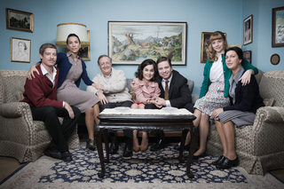
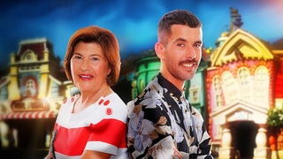

Mon, 19 Nov 2012 16:30:27 GMT
El biopic sobre el Rey inicia su rodaje en Telencinco
El biopic sobre el Rey inicia su rodaje en Telencinco
Desde hace un tiempo, las cadenas españolas se han lanzado a producir tv-movies sobre la vida de personalidades de mayor o menor envergadura. Cantantes, toreros, actores, políticos… cada vez son más los nombres de “famosos” que ven plasmada su biografía en la pequeña pantalla. Hace un tiempo, tuvimos noticias de que el grupo Mediaset estaba preparando un biopic ni más ni menos que sobre la figura de Juan Carlos I. Así pues, en esta línea, hoy podemos anunciar que este miércoles se inicia el rodaje del mismo. El biopic, que será presentado en tres entregas, nos contará los hechos de la vida del monarca que abarcan un periodo que se inicia en 1948, fecha en que el Rey, que contaba entonces con 10 años, viaja a Madrid para estudiar en “Las Jarillas”, un colegio al que acuden los hijos de las familias aristocráticas, y culmina en 1993, año en que falleció Don Juan, conde de Barcelona. El casting que protagonizaría la historia era una de las noticias más esperadas y ya tenemos todos los nombres. Fernando Gil, que curiosamente ya interpretó el mismo personaje en ‘Alfonso, el príncipe maldito’ será el encargado de ponerse en la piel del monarca. Así mismo, Cristina Brondo (’Herederos‘) interpretará a la Reina Sofía. Otros nombres que aparecerán en esta producción de Videomedia con Telecinco, serán Patrick Criado (‘Águila Roja’) como un Juan Carlos adolescente o Paco Merino en el papel de Franco. Los padres del monarca estarán interpretados por José Luis García-Pérez y Marta Belaustegui. Por su parte, Adriana Torrebejano será la Condesa Olghina de Robillant, un amor de juventud del Rey. El rodaje estará bajo la supervisión del gallego Norberto López Amado, director de ‘Tierra de Lobos‘. No es la primera tv-movie que tiene como protagonistas a figuras de la Casa Real. Amén de la mencionada ‘Alfonso, el príncipe maldito’ de 2010, la propia Telecinco llevó a cabo una producción sobre los Príncipes de Asturias, por cierto, con Fernando Gil interpretando a Don Felipe, obra que generó tanta polémica como repercusión. La reina Sofía ha tenido también su propia película, en Antena 3, con Nadia de Santiago como protagonista. Por eso, era de esperar que este nuevo reto, centrado en la figura del Jefe de Estado, llegara hasta nosotros. Se consiga una mayor o menor calidad, la expectación y curiosidad están aseguradas y, por tanto, se auguran unos buenos índices de audiencia cuando, al fin, se estrene el proyecto. En ¡Vaya Tele! | ‘Felipe y Letizia, una historia de amor, dulzor real en Telecinco
Desde hace un tiempo, las cadenas españolas se han lanzado a producir tv-movies sobre la vida de personalidades de mayor o menor envergadura. Cantantes, toreros, actores, políticos… cada vez son más los nombres de “famosos” que ven plasmada su biografía en la pequeña pantalla. Hace un tiempo, tuvimos noticias de que el grupo Mediaset estaba preparando un biopic ni más ni menos que sobre la figura de Juan Carlos I. Así pues, en esta línea, hoy podemos anunciar que este miércoles se inicia el rodaje del mismo.
El biopic, que será presentado en tres entregas, nos contará los hechos de la vida del monarca que abarcan un periodo que se inicia en 1948, fecha en que el Rey, que contaba entonces con 10 años, viaja a Madrid para estudiar en “Las Jarillas”, un colegio al que acuden los hijos de las familias aristocráticas, y culmina en 1993, año en que falleció Don Juan, conde de Barcelona. El casting que protagonizaría la historia era una de las noticias más esperadas y ya tenemos todos los nombres. Fernando Gil, que curiosamente ya interpretó el mismo personaje en ‘Alfonso, el príncipe maldito’ será el encargado de ponerse en la piel del monarca. Así mismo, Cristina Brondo (’Herederos‘) interpretará a la Reina Sofía.
Otros nombres que aparecerán en esta producción de Videomedia con Telecinco, serán Patrick Criado (‘Águila Roja’) como un Juan Carlos adolescente o Paco Merino en el papel de Franco. Los padres del monarca estarán interpretados por José Luis García-Pérez y Marta Belaustegui. Por su parte, Adriana Torrebejano será la Condesa Olghina de Robillant, un amor de juventud del Rey. El rodaje estará bajo la supervisión del gallego Norberto López Amado, director de ‘Tierra de Lobos‘.
No es la primera tv-movie que tiene como protagonistas a figuras de la Casa Real. Amén de la mencionada ‘Alfonso, el príncipe maldito’ de 2010, la propia Telecinco llevó a cabo una producción sobre los Príncipes de Asturias, por cierto, con Fernando Gil interpretando a Don Felipe, obra que generó tanta polémica como repercusión. La reina Sofía ha tenido también su propia película, en Antena 3, con Nadia de Santiago como protagonista. Por eso, era de esperar que este nuevo reto, centrado en la figura del Jefe de Estado, llegara hasta nosotros. Se consiga una mayor o menor calidad, la expectación y curiosidad están aseguradas y, por tanto, se auguran unos buenos índices de audiencia cuando, al fin, se estrene el proyecto.
En ¡Vaya Tele! | ‘Felipe y Letizia, una historia de amor, dulzor real en Telecinco
Sun, 18 Nov 2012 19:52:45 GMT
'Gossip Girl', ¿quién acabará con quién?
'Gossip Girl', ¿quién acabará con quién?
No somos muchos, pero ahí estamos, seis temporadas después esperando que ‘Gossip Girl‘ termine con un poco de decencia su andadura en televisión. Pocos hemos mantenido el interés durante todos los episodios, y a ver quién es el listo que se acuerda de alguna trama de hace un par de temporadas. ¿Nadie? Me lo imaginaba. Pero por inercia o por nostalgia, después de seis años y más de cien episodios aquí estamos, a punto de conocer quién es la “reina cotilla” y cómo se estructurarán finalmente todas las parejas. La figura de “gossip girl“ ha sido siempre un macguffin como una catedral de grande, al estilo de la madre en ‘Cómo conocí a vuestra madre’ aunque sin despertar tanta polémica. La para muchos sustituta de ‘The OC’ degeneró por completo tras su primera temporada, y ahora sólo queda un vestigio de lo que hace mucho tiempo fue. Para esta sexta temporada han querido seguir con la tontería de siempre, retrasando hasta el final la creación de alguna pareja estable e introduciendo a zorras manipuladoras secundarias para levantar un poco de polvo. Como si a alguien le importara ya eso. En este caso la zorra tiene tan sólo 17 años, se llama Sage, va al instituto y es la hijastra de Serena (si has entrado a leer esto sin haber visto la serie desde hace tiempo seguro que te has quedado picueto). Con esto han querido retomar un poco la esencia de los primeros capítulos, cuando todos los actores interpretaban a niños de 17 años y su único interés era putearse mutuamente. Ahora, sin embargo, todos están centrados en otros asuntos: Dan, en su novela por capítulos; Blair, en su nuevo línea de vestidos; Chuck, en desenmascarar a su padre; y Serena, en no morir de sobredosis. Me da igual todo esto, a mí ya lo único que me interesa es saber si Blair acabará finalmente con Chuck, si Dan y Serena volverán a ser la pareja perfecta (y esa cena en la hamburguesería del último capítulo apunta a que sí) y, sobre todo, saber quién es “gossip girl”. Unos apuntan a Dorota, otros a Nelly Yuki, cuyo regreso en esta última temporada ha resultado algo sospechoso, y algunos incluso a Kristen Bell, la actriz que pone la voz en off y que aparecerá en el último episodio de la serie. Sea quien sea, espero un nombre claro. Esto no es ‘Perdidos’, a mí que no se me pongan profundos. En ¡Vaya Tele! | ‘Gossip Girl’, la temporada final promete boda y final feliz

No somos muchos, pero ahí estamos, seis temporadas después esperando que ‘Gossip Girl‘ termine con un poco de decencia su andadura en televisión. Pocos hemos mantenido el interés durante todos los episodios, y a ver quién es el listo que se acuerda de alguna trama de hace un par de temporadas. ¿Nadie? Me lo imaginaba. Pero por inercia o por nostalgia, después de seis años y más de cien episodios aquí estamos, a punto de conocer quién es la “reina cotilla” y cómo se estructurarán finalmente todas las parejas.
La figura de “gossip girl“ ha sido siempre un macguffin como una catedral de grande, al estilo de la madre en ‘Cómo conocí a vuestra madre’ aunque sin despertar tanta polémica. La para muchos sustituta de ‘The OC’ degeneró por completo tras su primera temporada, y ahora sólo queda un vestigio de lo que hace mucho tiempo fue. Para esta sexta temporada han querido seguir con la tontería de siempre, retrasando hasta el final la creación de alguna pareja estable e introduciendo a zorras manipuladoras secundarias para levantar un poco de polvo. Como si a alguien le importara ya eso.
En este caso la zorra tiene tan sólo 17 años, se llama Sage, va al instituto y es la hijastra de Serena (si has entrado a leer esto sin haber visto la serie desde hace tiempo seguro que te has quedado picueto). Con esto han querido retomar un poco la esencia de los primeros capítulos, cuando todos los actores interpretaban a niños de 17 años y su único interés era putearse mutuamente. Ahora, sin embargo, todos están centrados en otros asuntos: Dan, en su novela por capítulos; Blair, en su nuevo línea de vestidos; Chuck, en desenmascarar a su padre; y Serena, en no morir de sobredosis.
Me da igual todo esto, a mí ya lo único que me interesa es saber si Blair acabará finalmente con Chuck, si Dan y Serena volverán a ser la pareja perfecta (y esa cena en la hamburguesería del último capítulo apunta a que sí) y, sobre todo, saber quién es “gossip girl”. Unos apuntan a Dorota, otros a Nelly Yuki, cuyo regreso en esta última temporada ha resultado algo sospechoso, y algunos incluso a Kristen Bell, la actriz que pone la voz en off y que aparecerá en el último episodio de la serie. Sea quien sea, espero un nombre claro. Esto no es ‘Perdidos’, a mí que no se me pongan profundos.
En ¡Vaya Tele! | ‘Gossip Girl’, la temporada final promete boda y final feliz
Sun, 18 Nov 2012 07:00:32 GMT
'Todos los hombres sois iguales', Nostalgia TV
'Todos los hombres sois iguales', Nostalgia TV
Hubo un tiempo, a nivel de ficción ya muy lejano, en que el estreno de una nueva serie española era un acontecimiento soberbio, por lo infrecuente del mismo. En la televisión de los 90, algunas series como ‘Farmacia de guardia‘ barrieron el polvo de cierta reticencia a pensar que nosotros también podíamos hacer cosas divertidas, de calidad y que enganchasen a la audiencia. La serie ‘Todos los hombres sois iguales’ es un ejemplo de ese paso adelante. Los espectadores devoraban los programas españoles y las series americanas. Los modelos que nos llegaban de USA tenían, a parte de su calidad dramática y técnica, como un halo de grandeza a la que la ficción española no podía aspirar. Pero, por fin, afortunadamente, nos quitamos ese corsé y empezamos a crear series que, cómo no, calaron en el gran público. La llegada de las teles privadas tuvo mucho que ver en eso. Hoy, taitantos años después, se nos permite echar la vista atrás y recordar con nostalgia (toma juego de palabras) algunas de aquellas series que nuestros inocentes ojos contemplaban por primera vez. La serie que primero fue película En 1994, Manuel Gómez Pereira dirigió una comedia protagonizada por Imanol Arias, Juanjo Puigcorbé, Antonio Resines y Cristina Marcos. El éxito de la cinta entre el público y también de cara a la crítica, ganó dos premios Goya en la categoría de Guión Original y Mejor Actriz, llevó a alguna mente pensante a considerar que su traslado a la pequeña pantalla, adaptada como serie de prime-time, podría ser una buena idea para una tele privada que aún estaba naciendo y que, por entonces, nos llenaba de una sana esperanza. Así se engendró la serie, que se llamó igual que la peli, ‘Todos los hombres sois iguales’ y que se alargó durante cinco temporadas. Guerra de sexos ¿Qué habría hecho la ficción sin un arma tan poderosa, dinámica y con tantas caras como es la guerra de sexos? El argumento principal de la serie era la historia de tres amigos que, por circunstancias, se separaban de sus respectivas esposas los tres a un tiempo. Envalentonados por lo que consideraban iba a significar retomar su vida de solteros, decidían irse a vivir los tres juntos y hacer lo que les diera la gana, con esas típicas exclamaciones de “a partir de ahora pondré los pies encima de la mesa” (yo soy mujer y pongo los pies encima de la mesa, no sé en qué lugar me deja eso) y se conjuraban para hacer de su pisito una auténtica fortaleza en la que ninguna mujer pasaría más de una noche. Pero como esto es una comedia y los tópicos son lo que son, pues resultaba que los tres hombres, hechos y derechos, no tenían ni idea de cómo llevar las tareas domésticas. Eran unos ineptos totales porque, en su momento, nadie les había dicho que aprender a pasar la fregona no era ninguna deshonra para el macho. Esto, a pesar de ser un topicazo, ha significado y significa una verdad como un templo para muchas parejas antiguas y presentes, así que poca risa. Así que los varones contrataban a una asistenta para que les resolviera esos asuntos tan molestos. Una chica que se convertía en un objeto de caza sexual primero, y en una confidente después, pues la muchacha resultaba ser atractiva, inteligente y dura como una piedra, a base de, precisamente, relacionarse con machos alfa que creen sabérselas todas. La serie explotaba mucho ciertos convencionalismos sí, pero conseguía ser fresca, divertida y hasta desternillante en muchos momentos, pues tenía unos guiones fabulosos con un equipo de creativos capitaneados por un Joaquín Oristrell más atinado que nunca. De hecho, en su tiempo, muchos la calificaron de surrealista y transgresora. Recordad que estábamos en 1996 y que la serie competía, por ejemplo con ‘La casa de los líos’ con Arturo Fernández en Antena 3. Una mesa con veinte patas Los “solteros de oro” que protagonizaban la serie formaban un trío muy equilibrado, lo suficientemente iguales para embarcarse en aventuras sin pensarlo demasiado, lo suficientemente diferentes como para destacar, generar conflicto y aportar matices. Joaquín estaba interpretado por Josema Yuste. Era un presentador de televisión un tanto engreído y petulante. Manolo, encarnado por Tito Valverde, era un árbitro que sólo ponía una cosa por encima del fútbol: el amor a sus hijas. Venía a ser ese tipo de personaje masculino, cabezota y un poco rancio que esconde un alma sensible y hasta un tanto ñoña. El último del trío era Juan Luis, interpretado por Luis Fernando Alvés. Era un dentista caradura y plimboy (que diría Paco Martínez Soria) con un alto concepto de su atractivo personal. En una parte de la balanza, estos tres, y en la otra, Yoli, la chica que limpiaba casa y mente, con una Ana Otero que se rebeló como una fantástica actriz. En general, creo que todo el casting estaba enormemente acertado pero con Ana Otero lo bordaron, porque sabía darle al personaje ese cariz duro, cínico y hasta un poco derrotista que tan bien supo calar en el coranzocito de la audiencia. Estos cuatro personajes formaban un grupo familiar que, por su peculiaridad, ya ofrecía bastante conflicto y muchas posibilidades de liarla. Pero, claro, a parte, cada uno de los separados tenía su correspondiente familia: sus ex-mujeres, las nuevas parejas de éstas, sus hijos… y la propia Yoli tenía un niño, una hermana un tanto estrafalaria (un jovencísima Laura Pamplona) y un ex que era malo como la quina. Así que, en realidad, la serie ponía en ristre hasta cinco historias familiares diferentes, para todos los gustos y colores. Y eso que nos dejamos a los vecinos, que aportaban lo que podían a esta ya sabrosa salsa. Una serie inolvidable Recuerdo esperar el momento de que empezara la serie con muchísimas ganas. Muchos todavía en esa época (todavía en ésta) la consideraban una españolada más pero a mí me encantaba ver una serie de ficción nacional en la que se usaba nuestro vocabulario y en la que los personajes se podían parecer a mi vecino del quinto (no se parecían ni por casualidad, no obstante). El mérito de series como ésta, que no contaba con mucho presupuesto y habían de ajustarse a baremos de producción muy esclavos residía en sus guiones y en cómo los creadores se sacaban las mañas para inventar historias adictivas con elementos muy básicos. La serie fue un éxito que declinó un tanto cuando la trama principal empezó a hacer hincapié en los aspectos más dramáticos de las historias y no tanto en las peripecias locuelas que se vivían en sus inicios. Un detalle sobre el final de la serie es el hecho de que inspiró otra ficción de la casa Telecinco. La mítica ‘El Comisario‘ nació como comedia, llamada ‘Las calles de San Fernando’ y la intención de la cadena amiga era apostar por un tono parecido al de ‘Todos los hombres sois iguales’, pero, esta vez, con Tito Valverde como protagonista absoluto. Como veis, la cosa dio muchas vueltas pero, afortunadamente, nos deparó una estupenda ficción nacional. Ficha Técnica: Todos los hombres sois iguales
Título Original: Todos los hombres sois iguales
Género: Comedia
Emitida en España: Telecinco, FDF
Disponibilidad DVD: No En ¡Vaya Tele! | Nostalgia TV

Hubo un tiempo, a nivel de ficción ya muy lejano, en que el estreno de una nueva serie española era un acontecimiento soberbio, por lo infrecuente del mismo. En la televisión de los 90, algunas series como ‘Farmacia de guardia‘ barrieron el polvo de cierta reticencia a pensar que nosotros también podíamos hacer cosas divertidas, de calidad y que enganchasen a la audiencia. La serie ‘Todos los hombres sois iguales’ es un ejemplo de ese paso adelante.
Los espectadores devoraban los programas españoles y las series americanas. Los modelos que nos llegaban de USA tenían, a parte de su calidad dramática y técnica, como un halo de grandeza a la que la ficción española no podía aspirar. Pero, por fin, afortunadamente, nos quitamos ese corsé y empezamos a crear series que, cómo no, calaron en el gran público. La llegada de las teles privadas tuvo mucho que ver en eso. Hoy, taitantos años después, se nos permite echar la vista atrás y recordar con nostalgia (toma juego de palabras) algunas de aquellas series que nuestros inocentes ojos contemplaban por primera vez.
La serie que primero fue película

En 1994, Manuel Gómez Pereira dirigió una comedia protagonizada por Imanol Arias, Juanjo Puigcorbé, Antonio Resines y Cristina Marcos. El éxito de la cinta entre el público y también de cara a la crítica, ganó dos premios Goya en la categoría de Guión Original y Mejor Actriz, llevó a alguna mente pensante a considerar que su traslado a la pequeña pantalla, adaptada como serie de prime-time, podría ser una buena idea para una tele privada que aún estaba naciendo y que, por entonces, nos llenaba de una sana esperanza. Así se engendró la serie, que se llamó igual que la peli, ‘Todos los hombres sois iguales’ y que se alargó durante cinco temporadas.
Guerra de sexos
¿Qué habría hecho la ficción sin un arma tan poderosa, dinámica y con tantas caras como es la guerra de sexos? El argumento principal de la serie era la historia de tres amigos que, por circunstancias, se separaban de sus respectivas esposas los tres a un tiempo. Envalentonados por lo que consideraban iba a significar retomar su vida de solteros, decidían irse a vivir los tres juntos y hacer lo que les diera la gana, con esas típicas exclamaciones de “a partir de ahora pondré los pies encima de la mesa” (yo soy mujer y pongo los pies encima de la mesa, no sé en qué lugar me deja eso) y se conjuraban para hacer de su pisito una auténtica fortaleza en la que ninguna mujer pasaría más de una noche.
Pero como esto es una comedia y los tópicos son lo que son, pues resultaba que los tres hombres, hechos y derechos, no tenían ni idea de cómo llevar las tareas domésticas. Eran unos ineptos totales porque, en su momento, nadie les había dicho que aprender a pasar la fregona no era ninguna deshonra para el macho. Esto, a pesar de ser un topicazo, ha significado y significa una verdad como un templo para muchas parejas antiguas y presentes, así que poca risa.
Así que los varones contrataban a una asistenta para que les resolviera esos asuntos tan molestos. Una chica que se convertía en un objeto de caza sexual primero, y en una confidente después, pues la muchacha resultaba ser atractiva, inteligente y dura como una piedra, a base de, precisamente, relacionarse con machos alfa que creen sabérselas todas.
La serie explotaba mucho ciertos convencionalismos sí, pero conseguía ser fresca, divertida y hasta desternillante en muchos momentos, pues tenía unos guiones fabulosos con un equipo de creativos capitaneados por un Joaquín Oristrell más atinado que nunca. De hecho, en su tiempo, muchos la calificaron de surrealista y transgresora. Recordad que estábamos en 1996 y que la serie competía, por ejemplo con ‘La casa de los líos’ con Arturo Fernández en Antena 3.
Una mesa con veinte patas
Los “solteros de oro” que protagonizaban la serie formaban un trío muy equilibrado, lo suficientemente iguales para embarcarse en aventuras sin pensarlo demasiado, lo suficientemente diferentes como para destacar, generar conflicto y aportar matices.
Joaquín estaba interpretado por Josema Yuste. Era un presentador de televisión un tanto engreído y petulante. Manolo, encarnado por Tito Valverde, era un árbitro que sólo ponía una cosa por encima del fútbol: el amor a sus hijas. Venía a ser ese tipo de personaje masculino, cabezota y un poco rancio que esconde un alma sensible y hasta un tanto ñoña. El último del trío era Juan Luis, interpretado por Luis Fernando Alvés. Era un dentista caradura y plimboy (que diría Paco Martínez Soria) con un alto concepto de su atractivo personal.
En una parte de la balanza, estos tres, y en la otra, Yoli, la chica que limpiaba casa y mente, con una Ana Otero que se rebeló como una fantástica actriz. En general, creo que todo el casting estaba enormemente acertado pero con Ana Otero lo bordaron, porque sabía darle al personaje ese cariz duro, cínico y hasta un poco derrotista que tan bien supo calar en el coranzocito de la audiencia.
Estos cuatro personajes formaban un grupo familiar que, por su peculiaridad, ya ofrecía bastante conflicto y muchas posibilidades de liarla. Pero, claro, a parte, cada uno de los separados tenía su correspondiente familia: sus ex-mujeres, las nuevas parejas de éstas, sus hijos… y la propia Yoli tenía un niño, una hermana un tanto estrafalaria (un jovencísima Laura Pamplona) y un ex que era malo como la quina. Así que, en realidad, la serie ponía en ristre hasta cinco historias familiares diferentes, para todos los gustos y colores. Y eso que nos dejamos a los vecinos, que aportaban lo que podían a esta ya sabrosa salsa.
Una serie inolvidable

Recuerdo esperar el momento de que empezara la serie con muchísimas ganas. Muchos todavía en esa época (todavía en ésta) la consideraban una españolada más pero a mí me encantaba ver una serie de ficción nacional en la que se usaba nuestro vocabulario y en la que los personajes se podían parecer a mi vecino del quinto (no se parecían ni por casualidad, no obstante). El mérito de series como ésta, que no contaba con mucho presupuesto y habían de ajustarse a baremos de producción muy esclavos residía en sus guiones y en cómo los creadores se sacaban las mañas para inventar historias adictivas con elementos muy básicos.
La serie fue un éxito que declinó un tanto cuando la trama principal empezó a hacer hincapié en los aspectos más dramáticos de las historias y no tanto en las peripecias locuelas que se vivían en sus inicios.
Un detalle sobre el final de la serie es el hecho de que inspiró otra ficción de la casa Telecinco. La mítica ‘El Comisario‘ nació como comedia, llamada ‘Las calles de San Fernando’ y la intención de la cadena amiga era apostar por un tono parecido al de ‘Todos los hombres sois iguales’, pero, esta vez, con Tito Valverde como protagonista absoluto. Como veis, la cosa dio muchas vueltas pero, afortunadamente, nos deparó una estupenda ficción nacional.
Ficha Técnica: Todos los hombres sois iguales
Título Original: Todos los hombres sois iguales
Género: Comedia
Emitida en España: Telecinco, FDF
Disponibilidad DVD: No En ¡Vaya Tele! | Nostalgia TV
Sat, 17 Nov 2012 12:00:23 GMT
Los hombres de nieve atacan al 'Doctor Who' en el tráiler del próximo especial navideño
Los hombres de nieve atacan al 'Doctor Who' en el tráiler del próximo especial navideño
La despedida de los Pond con la llegada de la mid season finale de la séptima temporada de ‘Doctor Who‘ fue un duro golpe del que muchos seguro que aún están recuperándose. Sin embargo, la serie ha de seguir adelante pase lo que pase (doy por sentado que una cancelación es prácticamente imposible a día de hoy) y ahora ya podemos ver el tráiler de ‘The Snowmen‘, el especial navideño de este 2012 que llegará a su fin en poco más de un mes. Como ya habéis podido ver, el tráiler cuenta con una introducción en la que Matt Smith y Jenna Louise-Coleman bromean sobre si es o no la primera aparición de la segunda, ya que es cierto que pudimos verla en el emotivo (y polémico) episodio ‘Asylum of the Daleks‘ (7×01), pero dando vida a un personaje completamente diferente. Dejando ya de laso su simpática charla, he de reconocer que me han llamado bastante la atención los peligrosos hombres de nieve, ya que su diseño está muy cerca de retrotraerme a esa época de la serie en la que no había mucho dinero para invertir en esa faceta y eso se notaba lo suyo. El capítulo, como no podía ser de otra manera, será emitido por BBC el próximo 25 de diciembre, contando en esta ocasión con el interés añadido de poder hacer una primera valoración sobre la nueva companion del Doctor, un punto siempre controvertido en la serie, por lo que no dudo que dará mucho de lo que hablar. Eso sí, la séptima temporada no volverá de forma normalizada hasta una fecha aún por confirmar de 2013. PD: Os dejo también una pequeña precuela de ‘The Snowmen’ que se lanzó casi al mismo tiempo que el tráiler. Vía | Collider En ¡Vaya Tele! | ‘Juego de Tronos’ y ‘Doctor Who’ se reparten los premios Hugo audiovisuales
La despedida de los Pond con la llegada de la mid season finale de la séptima temporada de ‘Doctor Who‘ fue un duro golpe del que muchos seguro que aún están recuperándose. Sin embargo, la serie ha de seguir adelante pase lo que pase (doy por sentado que una cancelación es prácticamente imposible a día de hoy) y ahora ya podemos ver el tráiler de ‘The Snowmen‘, el especial navideño de este 2012 que llegará a su fin en poco más de un mes.
Como ya habéis podido ver, el tráiler cuenta con una introducción en la que Matt Smith y Jenna Louise-Coleman bromean sobre si es o no la primera aparición de la segunda, ya que es cierto que pudimos verla en el emotivo (y polémico) episodio ‘Asylum of the Daleks‘ (7×01), pero dando vida a un personaje completamente diferente. Dejando ya de laso su simpática charla, he de reconocer que me han llamado bastante la atención los peligrosos hombres de nieve, ya que su diseño está muy cerca de retrotraerme a esa época de la serie en la que no había mucho dinero para invertir en esa faceta y eso se notaba lo suyo.
El capítulo, como no podía ser de otra manera, será emitido por BBC el próximo 25 de diciembre, contando en esta ocasión con el interés añadido de poder hacer una primera valoración sobre la nueva companion del Doctor, un punto siempre controvertido en la serie, por lo que no dudo que dará mucho de lo que hablar. Eso sí, la séptima temporada no volverá de forma normalizada hasta una fecha aún por confirmar de 2013.
PD: Os dejo también una pequeña precuela de ‘The Snowmen’ que se lanzó casi al mismo tiempo que el tráiler.
Vía | Collider
En ¡Vaya Tele! | ‘Juego de Tronos’ y ‘Doctor Who’ se reparten los premios Hugo audiovisuales
Sat, 17 Nov 2012 08:00:19 GMT
La flash mob de 'The Big Bang theory', la imagen de la semana
La flash mob de 'The Big Bang theory', la imagen de la semana
Si alguno seguís por Twitter a Kaley Cuoco, una de las protagonistas de ‘The Big Bang theory‘, quizás vierais que se ha pasado toda la semana dejando caer pistas de que habría una sorpresa de algún tipo en la grabación del episodio emitido el pasado jueves. Pues bien, por fin hemos podido ver dicha sorpresa, que no era otra cosa que una flash mob en medio del rodaje, que se hace en un estudio con público en directo. Cuoco convenció a su hermana Bri para que coreografiara unos cuantos pasos de baile al son de la ubicua ‘Call me maybe‘, de Carly Rae Jepsen, y el resultado es el que podéis ver en el vídeo de arriba, con Jim Parsons poniendo el toque final. En el vídeo también se ve a los dos showrunners de la serie, Bill Prady y Chuck Lorre, sorprendidos y divertidos por lo que acaban de ver, de lo que obviamente no tenían ni idea, y a parte del equipo de rodaje y de los actores participando en el baile, liderados por una Cuoco que desde luego está pasándoselo en grande. ‘The Big Bang theory’ está ya en su sexta temporada y no deja de atraer grandes números de audiencia. La semana pasada llegó a superar los 16 millones de espectadores y es la gran favorita para volver a arrasar en los próximos People’s Choice Awards, esos premios bastante locos que se pueden votar por Internet y que eligen, como ellos mismos dicen, a los favoritos de los fans en cine, televisión y música. Vía | EW Inside TV En ¡Vaya Tele! | La imagen de la semana
Si alguno seguís por Twitter a Kaley Cuoco, una de las protagonistas de ‘The Big Bang theory‘, quizás vierais que se ha pasado toda la semana dejando caer pistas de que habría una sorpresa de algún tipo en la grabación del episodio emitido el pasado jueves. Pues bien, por fin hemos podido ver dicha sorpresa, que no era otra cosa que una flash mob en medio del rodaje, que se hace en un estudio con público en directo. Cuoco convenció a su hermana Bri para que coreografiara unos cuantos pasos de baile al son de la ubicua ‘Call me maybe‘, de Carly Rae Jepsen, y el resultado es el que podéis ver en el vídeo de arriba, con Jim Parsons poniendo el toque final.
En el vídeo también se ve a los dos showrunners de la serie, Bill Prady y Chuck Lorre, sorprendidos y divertidos por lo que acaban de ver, de lo que obviamente no tenían ni idea, y a parte del equipo de rodaje y de los actores participando en el baile, liderados por una Cuoco que desde luego está pasándoselo en grande. ‘The Big Bang theory’ está ya en su sexta temporada y no deja de atraer grandes números de audiencia. La semana pasada llegó a superar los 16 millones de espectadores y es la gran favorita para volver a arrasar en los próximos People’s Choice Awards, esos premios bastante locos que se pueden votar por Internet y que eligen, como ellos mismos dicen, a los favoritos de los fans en cine, televisión y música.
Vía | EW Inside TV
En ¡Vaya Tele! | La imagen de la semana
Fri, 16 Nov 2012 19:46:44 GMT
'Web Therapy' asegura su tercera temporada en Showtime
'Web Therapy' asegura su tercera temporada en Showtime
Entre el revuelo por la cancelación de ‘Partners’ ha quedado un tanto oculta una renovación que importa a muy pocos. Showtime ha anunciado hoy el regreso de ‘Web Therapy‘, la serie de Lisa Kudrow que nació online para pasar el año pasado a la televisión de la mano del cable. Con esta maniobra, la ex-friend garantiza que su serie seguirá en antena al menos durante diez episodios más de media hora de duración. La segunda tanda de episodios emitidos el pasado verano en Showtime incluía la tercera y cuarta temporadas de la serie online (ya sabéis que la emisión en televisión no es más que un compendio de los episodios online a los que se le añaden unas cuantas escenas para completar la media hora), y está previsto que los nuevos episodios lleguen también en verano de 2013, aprovechando que clásicamente es la época más propicia para el cable y que la audiencia busca productos más ligeritos. Con respecto a su primera temporada, ‘Web Therapy‘ ha aumentado su audiencia en un 21%, aunque aun así sigue siendo de las más bajas del canal. Sin embargo, el bajo presupuesto de la serie y el caché que supone tener a tremendo plantel de estrellas invitadas les debe ser rentable. Por cierto, que para el próximo año volvemos a tener una reunión de ‘Friends’ en pantalla; tras Courteney Cox el año pasado y David Schwimmer en el presente, será Matt LeBlanc quien pase por la consulta de Fiona. Vía | Deadline En ¡Vaya Tele! | ‘Web Therapy’, tráiler de la nueva comedia de Showtime con Lisa Kudrow
Entre el revuelo por la cancelación de ‘Partners’ ha quedado un tanto oculta una renovación que importa a muy pocos. Showtime ha anunciado hoy el regreso de ‘Web Therapy‘, la serie de Lisa Kudrow que nació online para pasar el año pasado a la televisión de la mano del cable. Con esta maniobra, la ex-friend garantiza que su serie seguirá en antena al menos durante diez episodios más de media hora de duración.
La segunda tanda de episodios emitidos el pasado verano en Showtime incluía la tercera y cuarta temporadas de la serie online (ya sabéis que la emisión en televisión no es más que un compendio de los episodios online a los que se le añaden unas cuantas escenas para completar la media hora), y está previsto que los nuevos episodios lleguen también en verano de 2013, aprovechando que clásicamente es la época más propicia para el cable y que la audiencia busca productos más ligeritos.
Con respecto a su primera temporada, ‘Web Therapy‘ ha aumentado su audiencia en un 21%, aunque aun así sigue siendo de las más bajas del canal. Sin embargo, el bajo presupuesto de la serie y el caché que supone tener a tremendo plantel de estrellas invitadas les debe ser rentable. Por cierto, que para el próximo año volvemos a tener una reunión de ‘Friends’ en pantalla; tras Courteney Cox el año pasado y David Schwimmer en el presente, será Matt LeBlanc quien pase por la consulta de Fiona.
Vía | Deadline
En ¡Vaya Tele! | ‘Web Therapy’, tráiler de la nueva comedia de Showtime con Lisa Kudrow
Fri, 16 Nov 2012 16:30:24 GMT
Antena 3 convierte 'Amar en tiempos revueltos' en 'Amar es para siempre'
Antena 3 convierte 'Amar en tiempos revueltos' en 'Amar es para siempre'
Ayer TVE emitió el último episodio “regular” (falta un par de especiales) de una de sus telenovelas más conocidas, por no decir la más. Y es que ‘Amar en tiempos revueltos‘ llegó a su fin tras más de 1500 episodios a sus espaldas y siete años desde su estreno en 2005 en La 1 de la cadena estatal. Y Antena 3 ha esperado el final de la serie en TVE para anunciar como será la nueva etapa de la serie que comenzará a partir de enero. La primera sorpresa nos la llevamos cuando vemos que en vez de una nueva temporada (como se anunció en un primer momento), nos encontramos más bien con una serie secuela ya que Antena 3 ha decidido cambiar el título por ‘Amar es para siempre‘. Con este cambio también nos encontramos con un pequeño salto temporal (tres añitos), trasladando el escenario hasta 1960. Además tendremos nuevo centro de las historias, la relación entre Inés (Barbara Goenaga) y Mauro (Marc Cotet). Aunque seguiremos viendo a los personajes regulares de la serie de La 1, como la familia Muñoz y la parroquia de El Asturiano. Eso sí, en esta nueva andadura nos encontraremos con todo un florecimiento del barrio, con nuevos (y turbios) negocios y todo un plantel de nuevos y antiguos personajes. Una vez que ya conocemos lo que será la nueva etapa de ‘Amar es para siempre’, solo tengo dudas. Ya no en cuanto al contenido de la serie, cuya calidad me imagino que no diferirá demasiado de lo visto hasta ahora, si no en cuanto a si conseguirá destacar en Antena 3 tanto como en La 1. Y es que es muy difícil igualar la media de espectadores que tiene ‘Amar en tiempos revueltos’, para hacernos una idea se mueve en la sobremesa en los mismos números que ‘Gran Hotel’ en prime time. Y, sinceramente, creo que el cambio de nombre les puede ir un poco en su contra. Sobre todo porque en las promos que ya se pueden ver en Antena 3 no hay mención alguna a ‘Amar en Tiempos revueltos‘, por lo que da la sensación de que es algo independiente de la ficción de Diagonal (yo mismo cuando he visto la promo he tenido mis dudas hasta que he visto la primera foto promocional). Si no ha habido cambios, ‘Amar es para siempre’ está anunciada para enero, entonces veremos cómo reacciona el público ante esta reestructuración. Más Info | Antena 3 En ¡Vaya Tele! | ‘Amar en tiempos revueltos’, una gran serie que termina ciclo

Ayer TVE emitió el último episodio “regular” (falta un par de especiales) de una de sus telenovelas más conocidas, por no decir la más. Y es que ‘Amar en tiempos revueltos‘ llegó a su fin tras más de 1500 episodios a sus espaldas y siete años desde su estreno en 2005 en La 1 de la cadena estatal. Y Antena 3 ha esperado el final de la serie en TVE para anunciar como será la nueva etapa de la serie que comenzará a partir de enero.
La primera sorpresa nos la llevamos cuando vemos que en vez de una nueva temporada (como se anunció en un primer momento), nos encontramos más bien con una serie secuela ya que Antena 3 ha decidido cambiar el título por ‘Amar es para siempre‘. Con este cambio también nos encontramos con un pequeño salto temporal (tres añitos), trasladando el escenario hasta 1960.
Además tendremos nuevo centro de las historias, la relación entre Inés (Barbara Goenaga) y Mauro (Marc Cotet). Aunque seguiremos viendo a los personajes regulares de la serie de La 1, como la familia Muñoz y la parroquia de El Asturiano. Eso sí, en esta nueva andadura nos encontraremos con todo un florecimiento del barrio, con nuevos (y turbios) negocios y todo un plantel de nuevos y antiguos personajes.
Una vez que ya conocemos lo que será la nueva etapa de ‘Amar es para siempre’, solo tengo dudas. Ya no en cuanto al contenido de la serie, cuya calidad me imagino que no diferirá demasiado de lo visto hasta ahora, si no en cuanto a si conseguirá destacar en Antena 3 tanto como en La 1. Y es que es muy difícil igualar la media de espectadores que tiene ‘Amar en tiempos revueltos’, para hacernos una idea se mueve en la sobremesa en los mismos números que ‘Gran Hotel’ en prime time.
Y, sinceramente, creo que el cambio de nombre les puede ir un poco en su contra. Sobre todo porque en las promos que ya se pueden ver en Antena 3 no hay mención alguna a ‘Amar en Tiempos revueltos‘, por lo que da la sensación de que es algo independiente de la ficción de Diagonal (yo mismo cuando he visto la promo he tenido mis dudas hasta que he visto la primera foto promocional). Si no ha habido cambios, ‘Amar es para siempre’ está anunciada para enero, entonces veremos cómo reacciona el público ante esta reestructuración.
Más Info | Antena 3
En ¡Vaya Tele! | ‘Amar en tiempos revueltos’, una gran serie que termina ciclo
Fri, 16 Nov 2012 11:24:53 GMT
'Up All Night', desesperada por cambiar su agonía
'Up All Night', desesperada por cambiar su agonía
NBC tiene paciencia, pero hasta la hermana fea de las networks tiene su límite. A ‘Up All Night‘ le cayó el año pasado una renovación desde el cielo; sus audiencias no eran nada del otro mundo, y ni siquiera podía arrastrar a los espectadores de ‘The Office’, la comedia que le precedía inmediatamente en la parrilla. Y este año, después de cuatro meses en los que la gente se ha olvidado completamente de ella, ha vuelto como muerta en vida, intentando cambiar parte de su argumento con el objetivo de mantener a la poca audiencia que tenía. Pero no lo han conseguido. La segunda temporada de ‘Up All Night‘ cortó por lo sano, queriendo centrarse única y exclusivamente en la vida familiar en el hogar de los Brinkley y abandonando por completo el plató de televisión. La cancelación de ‘The Ava Show’ provocó un cambio en la dinámica familiar, con Reagan como nueva ama de casa y Chris volviendo a la vida laboral. Una reorganización completa para dar una vuelta de tuerca a esta comedia ligerita; pero, como digo, sin éxito. ‘Up All Night’ sigue siendo la misma comedia simpática y pizpireta que era cuando nació, con una cría más maja que las pesetas, dos padres socialmente incómodos y una diva de la televisión que se cree Cleopatra en versión moderna. Les han sacado de sus puestos habituales, pero en esencia sigue siendo lo mismo. Este cambio sólo ha servido para crear nuevas situaciones en las que pueden seguir comportándose tal y como son, sin que suponga ninguna diferencia con lo que ya vimos en la primera temporada. ¿Es eso un fallo? Para nada. En los primeros capítulos establecieron de forma perfecta el carácter de cada uno de los personajes, y se acomodaron fácilmente en el género de la comedia adorable, en la sonrisa frente a la carcajada, y no había necesidad ninguna de cambiar eso. Ahora NBC va a introducir un cambio aún más notable, pasando a un formato multicámara en el que los episodios se grabarán con público en directo. Cinco episodios más que supondrán un ultimátum a una serie que, salvo sorpresa mayúscula, ya está más que muerta. Sigue el gafe de Will Arnett en sus series como protagonista, suerte que en breve vuelve ‘Arrested Development’ de la mano de Netflix. En ¡Vaya Tele! | ‘Up All Night’, el triunfo y fracaso de la sitcom más adorable
NBC tiene paciencia, pero hasta la hermana fea de las networks tiene su límite. A ‘Up All Night‘ le cayó el año pasado una renovación desde el cielo; sus audiencias no eran nada del otro mundo, y ni siquiera podía arrastrar a los espectadores de ‘The Office’, la comedia que le precedía inmediatamente en la parrilla. Y este año, después de cuatro meses en los que la gente se ha olvidado completamente de ella, ha vuelto como muerta en vida, intentando cambiar parte de su argumento con el objetivo de mantener a la poca audiencia que tenía.
Pero no lo han conseguido. La segunda temporada de ‘Up All Night‘ cortó por lo sano, queriendo centrarse única y exclusivamente en la vida familiar en el hogar de los Brinkley y abandonando por completo el plató de televisión. La cancelación de ‘The Ava Show’ provocó un cambio en la dinámica familiar, con Reagan como nueva ama de casa y Chris volviendo a la vida laboral. Una reorganización completa para dar una vuelta de tuerca a esta comedia ligerita; pero, como digo, sin éxito.
‘Up All Night’ sigue siendo la misma comedia simpática y pizpireta que era cuando nació, con una cría más maja que las pesetas, dos padres socialmente incómodos y una diva de la televisión que se cree Cleopatra en versión moderna. Les han sacado de sus puestos habituales, pero en esencia sigue siendo lo mismo. Este cambio sólo ha servido para crear nuevas situaciones en las que pueden seguir comportándose tal y como son, sin que suponga ninguna diferencia con lo que ya vimos en la primera temporada.
¿Es eso un fallo? Para nada. En los primeros capítulos establecieron de forma perfecta el carácter de cada uno de los personajes, y se acomodaron fácilmente en el género de la comedia adorable, en la sonrisa frente a la carcajada, y no había necesidad ninguna de cambiar eso. Ahora NBC va a introducir un cambio aún más notable, pasando a un formato multicámara en el que los episodios se grabarán con público en directo. Cinco episodios más que supondrán un ultimátum a una serie que, salvo sorpresa mayúscula, ya está más que muerta. Sigue el gafe de Will Arnett en sus series como protagonista, suerte que en breve vuelve ‘Arrested Development’ de la mano de Netflix.
En ¡Vaya Tele! | ‘Up All Night’, el triunfo y fracaso de la sitcom más adorable
Thu, 15 Nov 2012 22:46:26 GMT
'American Horror Story' y Jessica Lange regresarán a FX con una tercera edición
'American Horror Story' y Jessica Lange regresarán a FX con una tercera edición
Morid de miedo y seducción, las mentes perturbadas de Ryan Murphy y Brad Falchuk tienen vía libre para seguir plasmando sus ideas en forma de serie de televisión. O lo que es lo mismo, FX ha anunciado la renovación de ‘American Horror Story’, que volverá en otoño de 2013 con su tercera edición. Y lo llamo edición y no temporada porque ya sabéis que en realidad ellos lo consideran series diferentes, se presentan a los Emmy en categoría miniserie y emplazan cada “edición“ en un lugar diferente, manteniendo a los actores pero cambiando a los personajes. Eso mismo es lo que va a pasar el año que viene, cuando abandonarán el manicomio y se irán a vete tú a saber dónde para seguir creando perturbadoras escenas, a cuál más intensa. El regreso de Jessica Lange está confirmado, y gran parte del resto del reparto también lo hará, sin que por el momento haya trascendido ningún otro nombre. Lo que es un misterio (y me da que para ellos también) es el escenario en que se desarrollará esta nueva historia, aunque viendo cómo ha degenerado la cosa de un año a otro, me espero cualquier cosa. Con esta segunda temporada la sensación es que ‘American Horror Story‘ ha abandonado el terror y se ha centrado más en la provocación y la insinuación intentando sobrepasar todos los límites establecidos. Ésa es la seña de identidad que ha acompañado siempre al dúo Murphy/Falchuk, pero parece que aquí están intentando encontrar su propio techo. La audiencia, morbosa como ella sola, acompaña, obteniendo datos formidables sobre todo entre los adultos jóvenes. Yo la estoy disfrutando incluso más que el año anterior, por mí que siga como hasta ahora. Vía | Deadline En ¡Vaya Tele! | Las claves de ‘American Horror Story: Asylum’ para crear el terror
Morid de miedo y seducción, las mentes perturbadas de Ryan Murphy y Brad Falchuk tienen vía libre para seguir plasmando sus ideas en forma de serie de televisión. O lo que es lo mismo, FX ha anunciado la renovación de ‘American Horror Story’, que volverá en otoño de 2013 con su tercera edición. Y lo llamo edición y no temporada porque ya sabéis que en realidad ellos lo consideran series diferentes, se presentan a los Emmy en categoría miniserie y emplazan cada “edición“ en un lugar diferente, manteniendo a los actores pero cambiando a los personajes.
Eso mismo es lo que va a pasar el año que viene, cuando abandonarán el manicomio y se irán a vete tú a saber dónde para seguir creando perturbadoras escenas, a cuál más intensa. El regreso de Jessica Lange está confirmado, y gran parte del resto del reparto también lo hará, sin que por el momento haya trascendido ningún otro nombre. Lo que es un misterio (y me da que para ellos también) es el escenario en que se desarrollará esta nueva historia, aunque viendo cómo ha degenerado la cosa de un año a otro, me espero cualquier cosa.
Con esta segunda temporada la sensación es que ‘American Horror Story‘ ha abandonado el terror y se ha centrado más en la provocación y la insinuación intentando sobrepasar todos los límites establecidos. Ésa es la seña de identidad que ha acompañado siempre al dúo Murphy/Falchuk, pero parece que aquí están intentando encontrar su propio techo. La audiencia, morbosa como ella sola, acompaña, obteniendo datos formidables sobre todo entre los adultos jóvenes. Yo la estoy disfrutando incluso más que el año anterior, por mí que siga como hasta ahora.
Vía | Deadline
En ¡Vaya Tele! | Las claves de ‘American Horror Story: Asylum’ para crear el terror
Thu, 15 Nov 2012 16:13:02 GMT
Trailer de 'House of cards', la esperada unión de Netflix y David Fincher
Trailer de 'House of cards', la esperada unión de Netflix y David Fincher
El próximo 1 de febrero, Netflix estrenará todos a la vez los 13 capítulos de que se compone ‘House of cards‘, el ambicioso remake que David Fincher ha supervisado de la miniserie inglesa del mismo título. Ambientada en las más altas esferas de la política, cuenta una historia de ambiciones, traiciones y manipulaciones alrededor de la figura de, en este caso, el presidente de Estados Unidos y uno de sus asesores, al que interpreta Kevin Spacey, y que pone en marcha un difícil y peligroso juego cuando no se cumplen las promesas que le había hecho el propio presidente antes de ganar las elecciones. Expectación por ver la serie hay bastante, y todavía más después de que Netflix haya hecho público el primer trailer completo de la serie, en el que tenemos un primer vistazo al tono que va a presidir la historia, en la que también hay implicada una joven y ambiciosa periodista. El estilo de lo que podemos ver es, desde luego, muy Fincher, que ha dirigido los dos primeros capítulos, y el resto han caído en manos de gente como Joel Schumacher, james Foley y Charles McDougall. El dramaturgo Beau Willimon, autor de la obra en la que se basó ‘Los idus de marzo‘, ha sido el encargado de escribir los guiones de la serie. ‘House of cards’ no es la primera ficción producida directamente para Netflix (ahí está ‘Lilyhammer‘), pero desde luego va a ser la que más ruido haga y la que muchos críticos creen que podría empezar a ca,biar el modelo de producción y distribución televisiva en Estados Unidos. El videoclub online también resucitará ‘Arrested Development‘ y podría estar cerca de hacerlo también con ‘The Killing‘, y parece estar evolucionando hacia algo que pueda amenazar la hegemonía en el terreno de las series, sobre todo, de los canales por cable. Vía | Twitter (@rrey) En ¡Vaya Tele! | Netflix y la producción propia de series: ¿puede la compañía cambiar la industria?
El próximo 1 de febrero, Netflix estrenará todos a la vez los 13 capítulos de que se compone ‘House of cards‘, el ambicioso remake que David Fincher ha supervisado de la miniserie inglesa del mismo título. Ambientada en las más altas esferas de la política, cuenta una historia de ambiciones, traiciones y manipulaciones alrededor de la figura de, en este caso, el presidente de Estados Unidos y uno de sus asesores, al que interpreta Kevin Spacey, y que pone en marcha un difícil y peligroso juego cuando no se cumplen las promesas que le había hecho el propio presidente antes de ganar las elecciones.
Expectación por ver la serie hay bastante, y todavía más después de que Netflix haya hecho público el primer trailer completo de la serie, en el que tenemos un primer vistazo al tono que va a presidir la historia, en la que también hay implicada una joven y ambiciosa periodista. El estilo de lo que podemos ver es, desde luego, muy Fincher, que ha dirigido los dos primeros capítulos, y el resto han caído en manos de gente como Joel Schumacher, james Foley y Charles McDougall. El dramaturgo Beau Willimon, autor de la obra en la que se basó ‘Los idus de marzo‘, ha sido el encargado de escribir los guiones de la serie.
‘House of cards’ no es la primera ficción producida directamente para Netflix (ahí está ‘Lilyhammer‘), pero desde luego va a ser la que más ruido haga y la que muchos críticos creen que podría empezar a ca,biar el modelo de producción y distribución televisiva en Estados Unidos. El videoclub online también resucitará ‘Arrested Development‘ y podría estar cerca de hacerlo también con ‘The Killing‘, y parece estar evolucionando hacia algo que pueda amenazar la hegemonía en el terreno de las series, sobre todo, de los canales por cable.
Vía | Twitter (@rrey)
En ¡Vaya Tele! | Netflix y la producción propia de series: ¿puede la compañía cambiar la industria?
Mon, 19 Nov 2012 14:22:53 GMT
Sugerencias Semanales | Semana del 19 al 25 de noviembre
Sugerencias Semanales | Semana del 19 al 25 de noviembre
Se acerca el invierno… y no lo digo porque haya salido el primer soso-teaser de la tercera temporada de ‘Juego de Tronos’ (que consiste en la fecha y ya) el caso es que el veranillo de San Martín está llegando a su fin y por alguna extraña razón nos encontramos con una de las semanas más tranquilas televisivamente hablando de lo que llevamos de año. Este lunes tendremos el regreso de ‘La Señora‘, que sustituye a ‘Amar en tiempos revueltos’ en la sobremesa de La 1. Por la noche volveremos a ver uno de los grandes duelos que cada semana vemos en televisión. ‘Tu Cara Me Suena‘ (con Santiago Segura haciendo Gangnam Style, no digo nada), ‘Isabel‘ y ‘La que se avecina‘. Aunque yo si pudiera seguiría viendo ‘The Walking Dead‘ en FOX, que esta temporada está un trillón de veces más interesante que lo visto hasta ahora. Esta semana supone, además el final de las series de Antena 3. El martes llegará a su final la primera temporada de ‘Érase una Vez‘, sin saber cuando nos encontraremos con la segunda en abierto, y el miércoles el desenlace de la segunda temporada de ‘Gran Hotel‘ (que en teoría será sustituida por ‘Downton Abbey, pero no está confirmado). Eso sí, juraría que hay trampa ya que quedan unos pocos episodios en el cajón para el próximo año. Lo que ya no sé es si el final de la ficción de Antena 3 logrará marcar un buen dato frente al comienzo de las galas en directo de ‘La Voz‘. El talent show de Telecinco emprende su etapa final en la que ya le toca elegir al público quién es La Voz de España. El jueves lo más interesante radica, de lejos, en ‘Pesadilla en la Cocina‘ y esa combinación con la versión americana completando la noche. Si tenéis TNT os animaría a ponerlo por la tarde ya que comienza, a eso de las 19h, la segunda temporada de la despiponante ‘Eagleheart‘. Todavía no sabemos exactamente qué sustituirá en parrilla a ‘Quién quiere casarse con mi hijo‘, pero se apunta a que será una nueva entrega de ‘Perdidos en la Tribu’. En EEUU también tenemos una semana bastante tranquilita ya que las cadenas quieren quemar sus últimos cartuchos antes de que se empiecen a ir sus series de parón a partir de diciembre, por lo que no veremos grandes cambios ni esta semana, ni la que viene. Bueno, sí: en USA Network termina la tercera temporada de ‘Covert Affairs‘ y en Inglaterra la primera de ‘Hunted‘. De deportes más o menos lo de siempre: martes y miércoles tendremos Liga de Campeones y el jueves Europa League. Vamos que esta semana es una de esas de “todos los días fútbol”. Y el fin de semana se une la última prueba del Mundial de Formula 1 con el Gran Premio de Brasil en el que Alonso intentará que Vettel no gane. En ¡Vaya Tele! | Sugerencias Semanales
Se acerca el invierno… y no lo digo porque haya salido el primer soso-teaser de la tercera temporada de ‘Juego de Tronos’ (que consiste en la fecha y ya) el caso es que el veranillo de San Martín está llegando a su fin y por alguna extraña razón nos encontramos con una de las semanas más tranquilas televisivamente hablando de lo que llevamos de año.
Este lunes tendremos el regreso de ‘La Señora‘, que sustituye a ‘Amar en tiempos revueltos’ en la sobremesa de La 1. Por la noche volveremos a ver uno de los grandes duelos que cada semana vemos en televisión. ‘Tu Cara Me Suena‘ (con Santiago Segura haciendo Gangnam Style, no digo nada), ‘Isabel‘ y ‘La que se avecina‘. Aunque yo si pudiera seguiría viendo ‘The Walking Dead‘ en FOX, que esta temporada está un trillón de veces más interesante que lo visto hasta ahora.
Esta semana supone, además el final de las series de Antena 3. El martes llegará a su final la primera temporada de ‘Érase una Vez‘, sin saber cuando nos encontraremos con la segunda en abierto, y el miércoles el desenlace de la segunda temporada de ‘Gran Hotel‘ (que en teoría será sustituida por ‘Downton Abbey, pero no está confirmado). Eso sí, juraría que hay trampa ya que quedan unos pocos episodios en el cajón para el próximo año. Lo que ya no sé es si el final de la ficción de Antena 3 logrará marcar un buen dato frente al comienzo de las galas en directo de ‘La Voz‘. El talent show de Telecinco emprende su etapa final en la que ya le toca elegir al público quién es La Voz de España.
El jueves lo más interesante radica, de lejos, en ‘Pesadilla en la Cocina‘ y esa combinación con la versión americana completando la noche. Si tenéis TNT os animaría a ponerlo por la tarde ya que comienza, a eso de las 19h, la segunda temporada de la despiponante ‘Eagleheart‘. Todavía no sabemos exactamente qué sustituirá en parrilla a ‘Quién quiere casarse con mi hijo‘, pero se apunta a que será una nueva entrega de ‘Perdidos en la Tribu’.
En EEUU también tenemos una semana bastante tranquilita ya que las cadenas quieren quemar sus últimos cartuchos antes de que se empiecen a ir sus series de parón a partir de diciembre, por lo que no veremos grandes cambios ni esta semana, ni la que viene. Bueno, sí: en USA Network termina la tercera temporada de ‘Covert Affairs‘ y en Inglaterra la primera de ‘Hunted‘.
De deportes más o menos lo de siempre: martes y miércoles tendremos Liga de Campeones y el jueves Europa League. Vamos que esta semana es una de esas de “todos los días fútbol”. Y el fin de semana se une la última prueba del Mundial de Formula 1 con el Gran Premio de Brasil en el que Alonso intentará que Vettel no gane.
En ¡Vaya Tele! | Sugerencias Semanales
Sun, 18 Nov 2012 16:20:23 GMT
Edición USA: 'The Big Bang Theory' sigue arrasando, qué pasa con los dramas médicos y más...
Edición USA: 'The Big Bang Theory' sigue arrasando, qué pasa con los dramas médicos y más...
Nuevo domingo y llega el turno de echar una mirada a la semana en USA. Así llegamos a Edición USA, la sección en la que intentamos analizar las audiencias que han tenido las series en EEUU esta semana. Una semana que es interesante en el sentido de que nos encontramos con la primera “normal” de los últimos tiempos, ya que entre debates presidenciales, el huracán Sandy y la noche electoral habíamos tenido varios parones en según qué series y qué días. Modern Family, sin rival los miércoles Entre premios, el boca a boca, las alabanzas de público y crítica era de extrañar que no diésemos tarde o temprano un titular como este. Y es que la sitcom del momento, ‘Modern Family‘, no tiene quien le tosa en la noche de los miércoles… sobre todo en cuanto a las demos 18-49 siendo líder por séptima semana consecutiva. Y es que el pasado miércoles la serie fue vista por 11,89 millones de espectadores y un 4,6 en demos superando en 1,6 puntos a su mayor rival, ‘Mentes Criminales’. Eso sí, lo que parece una alegría en realidad no lo es tanto ya que si comparamos con el año pasado vemos que la serie no logra alcanzar las cifras por las que se movía entonces. ‘The Big Bang Theory’ rompe la barrera de los veinte millones (con el Live+3) Otra a la que no le va nada mal en audiencias es a ‘The Big Bang Theory‘. Desde que se convirtió en la nueva reina de las comedias estadounidense (sobre todo después de la caída de ‘Dos Hombres y Medio‘), la otra serie de Chuck Lorre no ha parado de crecer semana tras semana. Tanto que esta semana nos enteramos de que su audiencia ha batido la barrera psicológica de los veinte millones de espectadores. Eso sí, es un dato que tiene trampa ya que incluye los espectadores de los siguientes tres días. Concretamente los datos se refieren al capítulo de la semana pasada que reunió a 16,68 millones de espectadores llegado a 20,3 en los días sucesivos. Y todo apunta que esta semana repetirán (o todavía mejor) ya que ‘The Big Bang Theory’ fue visto por 17,63 personas (5,7 en demos) logrando otro récord histórico para la sitcom.
NBC encarga cuatro episodios más de ‘Guys with Kids’ Entrando en el terreno de cosas raras que hacen las cadenas con sus series, esta semana NBC ha anunciado que han encargado cuatro episodios más de ‘Guys with kids‘, la única sitcom de la cadena de la que no sabíamos su futuro. Tras la cancelación de ‘Animal Practice’ y los back nine de ‘Go On’ y ‘The New Normal’, NBC ha preferido ser cautos con la serie (que no les funciona mal) y renovarla solo por cuatro episodios. Esta noticia no es la única respecto a encargos de las cadenas ya que ABC ha encargado tres guiones más tanto para ‘Malibu Country‘ como para ‘Last Man Standing‘. Ojo, esto no significa que tendrán tres episodios adicionales respecto a sus trece iniciales, sino que es más una medida “cautelar”. La otra cadena que ha estado “tocando” los episodios de sus series es CBS quien ha revisado los back nine de ‘Elementary‘ y ‘Vegas‘. La primera tendrá dos episodios más, concluyendo la primera temporada con veinticuatro, mientras que la segunda reducirá un episodio. ¿Hay esperanza para las series médicas? Ya para terminar una pequeña reflexión. Viendo las audiencias es difícil ver una razón de peso por la cual ni FOX ni TheCW no hayan cancelado ‘The Mob Doctor’ y ‘Emily Owens MD’ todavía. De hecho de esta última corrió como la pólvora el rumor de que la cadena había cerrado la producción de la serie, algo desmentido rápidamente por TheCW. El caso es que ‘The Mob Doctor‘ va de mal en peor, pudiéndose convertir en la siguiente cancelación de la temporada. Sin embargo por alguna extraña razón hay resistencia para hacerlo. Cosa que extraña viendo que las otras cadenas no han dudado en limpiar ya su parrilla. Lo mismo pasa con ‘Emily Owens MD’, este ligero drama médico no consigue hacerse notar en una noche no tan competitiva como la de los martes. El que las dos series coincidan además en su género, ambas son de médicos, hace que me pregunte si tanto FOX y TheCW las están aguantando en antena más por “marca” que por otra cosa. Quiero decir, actualmente solo hay cuatro dramas de médicos en antena (los otros dos son las veteranas ‘Anatomía de Grey’ y ‘Sin cita previa’) y tengo la impresión de que quieren ver quien de las dos cancela primero su “drama-nuevo-de-medicos”. Bueno, probablemente no sea tanto un pique si no una confianza ciega en que alguna de las dos propuestas termine funcionando. A saber. En ¡Vaya Tele! | Edición USA
Nuevo domingo y llega el turno de echar una mirada a la semana en USA. Así llegamos a Edición USA, la sección en la que intentamos analizar las audiencias que han tenido las series en EEUU esta semana. Una semana que es interesante en el sentido de que nos encontramos con la primera “normal” de los últimos tiempos, ya que entre debates presidenciales, el huracán Sandy y la noche electoral habíamos tenido varios parones en según qué series y qué días.
Modern Family, sin rival los miércoles
Entre premios, el boca a boca, las alabanzas de público y crítica era de extrañar que no diésemos tarde o temprano un titular como este. Y es que la sitcom del momento, ‘Modern Family‘, no tiene quien le tosa en la noche de los miércoles… sobre todo en cuanto a las demos 18-49 siendo líder por séptima semana consecutiva.
Y es que el pasado miércoles la serie fue vista por 11,89 millones de espectadores y un 4,6 en demos superando en 1,6 puntos a su mayor rival, ‘Mentes Criminales’. Eso sí, lo que parece una alegría en realidad no lo es tanto ya que si comparamos con el año pasado vemos que la serie no logra alcanzar las cifras por las que se movía entonces.
‘The Big Bang Theory’ rompe la barrera de los veinte millones (con el Live+3)
Otra a la que no le va nada mal en audiencias es a ‘The Big Bang Theory‘. Desde que se convirtió en la nueva reina de las comedias estadounidense (sobre todo después de la caída de ‘Dos Hombres y Medio‘), la otra serie de Chuck Lorre no ha parado de crecer semana tras semana. Tanto que esta semana nos enteramos de que su audiencia ha batido la barrera psicológica de los veinte millones de espectadores.
Eso sí, es un dato que tiene trampa ya que incluye los espectadores de los siguientes tres días. Concretamente los datos se refieren al capítulo de la semana pasada que reunió a 16,68 millones de espectadores llegado a 20,3 en los días sucesivos. Y todo apunta que esta semana repetirán (o todavía mejor) ya que ‘The Big Bang Theory’ fue visto por 17,63 personas (5,7 en demos) logrando otro récord histórico para la sitcom.
NBC encarga cuatro episodios más de ‘Guys with Kids’

Entrando en el terreno de cosas raras que hacen las cadenas con sus series, esta semana NBC ha anunciado que han encargado cuatro episodios más de ‘Guys with kids‘, la única sitcom de la cadena de la que no sabíamos su futuro. Tras la cancelación de ‘Animal Practice’ y los back nine de ‘Go On’ y ‘The New Normal’, NBC ha preferido ser cautos con la serie (que no les funciona mal) y renovarla solo por cuatro episodios.
Esta noticia no es la única respecto a encargos de las cadenas ya que ABC ha encargado tres guiones más tanto para ‘Malibu Country‘ como para ‘Last Man Standing‘. Ojo, esto no significa que tendrán tres episodios adicionales respecto a sus trece iniciales, sino que es más una medida “cautelar”. La otra cadena que ha estado “tocando” los episodios de sus series es CBS quien ha revisado los back nine de ‘Elementary‘ y ‘Vegas‘. La primera tendrá dos episodios más, concluyendo la primera temporada con veinticuatro, mientras que la segunda reducirá un episodio.
¿Hay esperanza para las series médicas?
Ya para terminar una pequeña reflexión. Viendo las audiencias es difícil ver una razón de peso por la cual ni FOX ni TheCW no hayan cancelado ‘The Mob Doctor’ y ‘Emily Owens MD’ todavía. De hecho de esta última corrió como la pólvora el rumor de que la cadena había cerrado la producción de la serie, algo desmentido rápidamente por TheCW.
El caso es que ‘The Mob Doctor‘ va de mal en peor, pudiéndose convertir en la siguiente cancelación de la temporada. Sin embargo por alguna extraña razón hay resistencia para hacerlo. Cosa que extraña viendo que las otras cadenas no han dudado en limpiar ya su parrilla. Lo mismo pasa con ‘Emily Owens MD’, este ligero drama médico no consigue hacerse notar en una noche no tan competitiva como la de los martes.
El que las dos series coincidan además en su género, ambas son de médicos, hace que me pregunte si tanto FOX y TheCW las están aguantando en antena más por “marca” que por otra cosa. Quiero decir, actualmente solo hay cuatro dramas de médicos en antena (los otros dos son las veteranas ‘Anatomía de Grey’ y ‘Sin cita previa’) y tengo la impresión de que quieren ver quien de las dos cancela primero su “drama-nuevo-de-medicos”. Bueno, probablemente no sea tanto un pique si no una confianza ciega en que alguna de las dos propuestas termine funcionando. A saber.
En ¡Vaya Tele! | Edición USA
Sat, 17 Nov 2012 14:00:18 GMT
Smart TV y la métrica de audiencias en televisión
Smart TV y la métrica de audiencias en televisión
Smart TV, HbbTV y cualquier invento que no sea una web clara y sencilla en la que el espectador encuentre los programas y series de televisión íntegros y sin complicaciones, en nuestro mercado español tiene muy cuestionado su éxito, en mi opinión. HbbTV es un invento que nació muerto, atrasado en el tiempo (¿cuántos amigos conoces que utilicen alguna aplicación HbbTV en casa de forma regular?) y Smart TV, aunque es una propuesta interesante, no acaba de asentar un uso masivo por diferentes razones. No obstante, la duda que plantea este artículo es si Smart TV, en un hipotético caso de uso masivo, es un sistema capaz de ofrecer una métrica analítica de televisión con capacidad de competir frente a los audímetros convencionales (la muestra actual es de 4.650 hogares, según Kantar Media). La realidad no es si un sistema propietario va a batir a otro en temas de medición… necesitamos todos los sistemas para conocer al espectador. ¿Qué dato es más interesante en una métrica de televisión? Las métricas de audiencia son muy complejas. El dato que tradicionalmente más nos ha importado son el share y el rating. Son datos de tendencia totales sobre gente que ha visto un programa frente a otros y cantidad de espectadores que estaban viendo la televisión en un momento determinado de consumo. Estas métricas no son exactas, y tampoco han pretendido serlo nunca. Únicamente marcan la tendencia masiva de consumo televisivo, sobre la cual los anunciantes y agencias pueden decidir el emplazamiento de sus campañas publicitarias a fin de conseguir una mayor efectividad. Para conseguir efectividad, lo mejor es acertar o máximo posible al público que está interesado en ti, tanto en disposición publicitaria de nuestro interés como contenidos también afines a nuestros gustos. Para ello, lo más importante es conocer al público. Con los avances tecnológicos de la última década, hay herramientas que van permitiendo conocer más nuestros gustos, pudiendo mejorar muchísimo más esta efectividad. Facebook y Google, por ejemplo, conocen perfectamente nuestros perfiles y seguro que si ves la publicidad que aparece en los laterales, algo te ha interesado alguna vez o ha llamado tu atención. Eso es un tipo de efectividad (publicitaria en este caso). Llegados a un modelo en el que el consumo televisivo puede venir por distintos medios y canales: televisión lineal, Boxee Box (o cualquier disco duro o DVR que conecte a la tele), un TiVo, la métrica se complica, y el perfil de usuario también. Por lo tanto, la tendencia general medida por los audímetros comenzó a ser cuestionada con la segmentación de las audiencias hace ya más de 5 años. Y puede que lo sea cada vez más. ¿Qué datos podría obtener Smart TV? Smart TV como sistema podría haber abierto una línea de negocio analítica, pero para ello necesita masa crítica, es decir, un número suficiente de gente que actue de muestra interesante para una métrica global. A día de hoy, desconozco si Smart TV ofrece estos servicios o tiene capacidad de realizar estas métricas, pero lo interesante del sistema sería que pudiese ofrecer todos los datos posibles del consumo de un programa: a través de qué aplicación, minuto a minuto, gustos frecuentes del espectador, datos demográficos y sociográficos… una información que dificilmente le contamos de forma voluntaria al televisor, pero que un sistema puede adivinar por otras fuentes. Y es aquí donde vienen los sistemas de hibridación e integración de métricas. Con un consumo segmentado, heterogéneo, multicanal, multidispositivo y atemporal marcado por una masa critica de espectadores cada vez mayor, la industria tendrá la necesidad de encontrar un sistema capaz de unir métricas de distintos campos: audímetros convencionales, televisión social (actividad en Facebook y Twitter), actividad y comportamiento del espectador en YouTube, DVR’s, PVR’s y mobile. Todos estos datos conseguirán una tendencia más perfilada, probablemente nunca un número exacto de visionados, pero sobre todo se acercarán más a los gustos, actividades y patrones de comportamiento de los distintos grupos de espectadores que conforman la masa crítica del consumo televisivo actual, pudiendo ofrecer a la industria una mayor efectividad, tanto en creación de contenido como publicitaria. Por lo tanto, Smart TV simplemente podría ser una pieza más del complejo engranaje de métricas de televisión al que evolucionamos como consumidores. En ¡Vaya Tele! | “La medición de audiencias tendrá nuevas métricas y las conversaciones en redes sociales”
Smart TV, HbbTV y cualquier invento que no sea una web clara y sencilla en la que el espectador encuentre los programas y series de televisión íntegros y sin complicaciones, en nuestro mercado español tiene muy cuestionado su éxito, en mi opinión. HbbTV es un invento que nació muerto, atrasado en el tiempo (¿cuántos amigos conoces que utilicen alguna aplicación HbbTV en casa de forma regular?) y Smart TV, aunque es una propuesta interesante, no acaba de asentar un uso masivo por diferentes razones.
No obstante, la duda que plantea este artículo es si Smart TV, en un hipotético caso de uso masivo, es un sistema capaz de ofrecer una métrica analítica de televisión con capacidad de competir frente a los audímetros convencionales (la muestra actual es de 4.650 hogares, según Kantar Media). La realidad no es si un sistema propietario va a batir a otro en temas de medición… necesitamos todos los sistemas para conocer al espectador.
¿Qué dato es más interesante en una métrica de televisión?
Las métricas de audiencia son muy complejas. El dato que tradicionalmente más nos ha importado son el share y el rating. Son datos de tendencia totales sobre gente que ha visto un programa frente a otros y cantidad de espectadores que estaban viendo la televisión en un momento determinado de consumo. Estas métricas no son exactas, y tampoco han pretendido serlo nunca. Únicamente marcan la tendencia masiva de consumo televisivo, sobre la cual los anunciantes y agencias pueden decidir el emplazamiento de sus campañas publicitarias a fin de conseguir una mayor efectividad.
Para conseguir efectividad, lo mejor es acertar o máximo posible al público que está interesado en ti, tanto en disposición publicitaria de nuestro interés como contenidos también afines a nuestros gustos. Para ello, lo más importante es conocer al público. Con los avances tecnológicos de la última década, hay herramientas que van permitiendo conocer más nuestros gustos, pudiendo mejorar muchísimo más esta efectividad. Facebook y Google, por ejemplo, conocen perfectamente nuestros perfiles y seguro que si ves la publicidad que aparece en los laterales, algo te ha interesado alguna vez o ha llamado tu atención. Eso es un tipo de efectividad (publicitaria en este caso).
Llegados a un modelo en el que el consumo televisivo puede venir por distintos medios y canales: televisión lineal, Boxee Box (o cualquier disco duro o DVR que conecte a la tele), un TiVo, la métrica se complica, y el perfil de usuario también. Por lo tanto, la tendencia general medida por los audímetros comenzó a ser cuestionada con la segmentación de las audiencias hace ya más de 5 años. Y puede que lo sea cada vez más.
¿Qué datos podría obtener Smart TV?
Smart TV como sistema podría haber abierto una línea de negocio analítica, pero para ello necesita masa crítica, es decir, un número suficiente de gente que actue de muestra interesante para una métrica global. A día de hoy, desconozco si Smart TV ofrece estos servicios o tiene capacidad de realizar estas métricas, pero lo interesante del sistema sería que pudiese ofrecer todos los datos posibles del consumo de un programa: a través de qué aplicación, minuto a minuto, gustos frecuentes del espectador, datos demográficos y sociográficos… una información que dificilmente le contamos de forma voluntaria al televisor, pero que un sistema puede adivinar por otras fuentes.
Y es aquí donde vienen los sistemas de hibridación e integración de métricas. Con un consumo segmentado, heterogéneo, multicanal, multidispositivo y atemporal marcado por una masa critica de espectadores cada vez mayor, la industria tendrá la necesidad de encontrar un sistema capaz de unir métricas de distintos campos: audímetros convencionales, televisión social (actividad en Facebook y Twitter), actividad y comportamiento del espectador en YouTube, DVR’s, PVR’s y mobile.
Todos estos datos conseguirán una tendencia más perfilada, probablemente nunca un número exacto de visionados, pero sobre todo se acercarán más a los gustos, actividades y patrones de comportamiento de los distintos grupos de espectadores que conforman la masa crítica del consumo televisivo actual, pudiendo ofrecer a la industria una mayor efectividad, tanto en creación de contenido como publicitaria. Por lo tanto, Smart TV simplemente podría ser una pieza más del complejo engranaje de métricas de televisión al que evolucionamos como consumidores.
En ¡Vaya Tele! | “La medición de audiencias tendrá nuevas métricas y las conversaciones en redes sociales”
Sat, 17 Nov 2012 10:00:26 GMT
'¿Quién quiere casarse con mi hijo?' finaliza su segunda temporada con un notable alto
'¿Quién quiere casarse con mi hijo?' finaliza su segunda temporada con un notable alto
Parece que poco a poco la televisión española se va pareciendo a la americana. Como al otro lado del charlo, los jueves comienzan a ser un día en el que es complicado escoger qué se puede ver en prime time. Si somos fieles al puro trash tv estoy seguro que, como yo, habéis sido fieles a la segunda temporada de ‘¿Quién quiere casarse con mi hijo?‘, la cual terminó ayer por todo lo alto. Esta segunda temporada de ‘¿Quién quiere casarse con mi hijo?‘ tenía una asignatura pendiente: superar todo el revuelo que montó con su primera temporada y seguir agradando a la audiencia. Eso, en un programa cuyo máximo exponente es el cásting de los concursantes es realmente complicado. Aún así, pese a que no han conseguido igualar al primer año, les ha salido una segunda temporada más que aceptable. Un casting ligeramente inferior Como ya hemos dicho, un programa de estas características se apoya principalmente en el cásting de sus concursantes. Si no consigues unos “especímentes” que agraden a la audiencia, por muy bien que hagas el programa nunca va a conseguir tener éxito. El cásting de la primera temporada fue excepcional y el de esta segunda le ha ido al quite, pero lamentablemente no han conseguido llegar al nivel que estuvo el de la primera. ¿Cuales fueron los fallos? Para mí dos participantes, mejor dicho tres. El primero, Pedro Isidoro, el vendedor ambulante. Su aspecto “cani” y su labia le podían haber conseguido muchos minutos de grandeza pero al final consiguieron todo lo contrario: saturarnos hasta la saciedad con sus burradas y desesperarnos con una madre que, la pobre, no parecía tener muchas luces delante de la cámara. Y el segundo, o mejor dicho los segundos, fueron los mellis. La idea de llevar a dos hermanos mellizos y que se “pelearan” por sus pretendientas era interesante y podría haber salido bien. El problema vino cuando llevas a gente como estos dos, tan aburridos, ilógicos, carentes de ritmo en todo y sin prácticamente conversación. Era ver una escena de ellos y desesperarme hasta límites insospechados, haciéndome querer no sólo cambiar de canal sino tirar el televisor por la ventana para así no verlos más. En cuanto al resto del cásting hay que decir que fue más que aceptable. Tanto Javi e Isabel como Gabi y Toñi dieron el juego que tenían que dar, mostrándonos escenas típicas del programa y situaciones inesperadas que consiguieron sacarnos más de una sonrisa. Mención aparte merecen Pedriño y Mary, las auténticas estrellas de esta segunda temporada. A mí me enamoraron desde el principio y no pude más que adorarlos durante todo el programa. Quién haya conseguido a esta pareja merece todos los bonuses del mundo en su sueldo ya que han sido de lo mejor de esta segunda temporada y, posiblemente, de lo que lleva el programa en antena. La explosión en Twitter, el complemento perfecto Pese a que en la primera temporada también hubo algo, esta segunda temporada ha sido la de la explosión en Twitter. La aparición de la denominación #hijostróspidos en todos los lados hizo que mucha gente se enganchara al programa únicamente para poder comentarlo en la red social. Y es que muchos han descubierto algo que ya se sabía, que programas como este se disfrutan mucho más en compañía, ya sea físicamente en el sofá de casa o virtualmente a través de Twitter. Estoy seguro que sin la participación en la red social el programa no habría sido el mismo. Y eso lo han sabido explotar en Mediaset, apuntando siempre los hashtags a usar en la red social (aunque luego la gente no le hiciera caso) y haciendo guiños varios a las redes sociales en las promos del programa. El montaje, el alma del programa Si el casting es uno de los pilares más importantes del programa, el otro es sin lugar a dudas el montaje. La facilidad que tiene el programa para reirse de sí mismo gracias a efectos de sonido, planos diversos y escenas bien escogidas es pasmosa. Gracias a este soberbio montaje el programa es como es: uno de los máximos exponentes del trash tv de nuestro país. En esta temporada se han superado en muchas ocasiones. Un claro ejemplo es el impagable momento de la final cuando Javi (supuestamente fuera de cámaras) intenta que su madre y Rocío entierren el hacha de guerra con la canción del guardaespaldas sonando en bucle una y otra vez. Momentos como este son los que definen al programa y los que lo hacen tal y como es, un entretenimiento tremendamente divertido que sirve para pasar un buen rato delante del televisor. En definitiva, esta segunda temporada ha estado realmente bien. No llega al excelente de la primera temporada por los fallos en el casting mencionados antes pero sí que ha tenido un buen nivel en términos generales. Si tuviéramos que darle una nota como en el instituto le daríamos, tal y como reza el título, un notable alto. Porque los tróspidos se lo merecen. ¡Larga vida a los tróspidos! En ¡Vaya Tele! | Vuelve la diversión con la exitosa segunda temporada de ‘¿Quién quiere casarse con mi hijo?’
Parece que poco a poco la televisión española se va pareciendo a la americana. Como al otro lado del charlo, los jueves comienzan a ser un día en el que es complicado escoger qué se puede ver en prime time. Si somos fieles al puro trash tv estoy seguro que, como yo, habéis sido fieles a la segunda temporada de ‘¿Quién quiere casarse con mi hijo?‘, la cual terminó ayer por todo lo alto.
Esta segunda temporada de ‘¿Quién quiere casarse con mi hijo?‘ tenía una asignatura pendiente: superar todo el revuelo que montó con su primera temporada y seguir agradando a la audiencia. Eso, en un programa cuyo máximo exponente es el cásting de los concursantes es realmente complicado. Aún así, pese a que no han conseguido igualar al primer año, les ha salido una segunda temporada más que aceptable.
Un casting ligeramente inferior
Como ya hemos dicho, un programa de estas características se apoya principalmente en el cásting de sus concursantes. Si no consigues unos “especímentes” que agraden a la audiencia, por muy bien que hagas el programa nunca va a conseguir tener éxito. El cásting de la primera temporada fue excepcional y el de esta segunda le ha ido al quite, pero lamentablemente no han conseguido llegar al nivel que estuvo el de la primera.

¿Cuales fueron los fallos? Para mí dos participantes, mejor dicho tres. El primero, Pedro Isidoro, el vendedor ambulante. Su aspecto “cani” y su labia le podían haber conseguido muchos minutos de grandeza pero al final consiguieron todo lo contrario: saturarnos hasta la saciedad con sus burradas y desesperarnos con una madre que, la pobre, no parecía tener muchas luces delante de la cámara.
Y el segundo, o mejor dicho los segundos, fueron los mellis. La idea de llevar a dos hermanos mellizos y que se “pelearan” por sus pretendientas era interesante y podría haber salido bien. El problema vino cuando llevas a gente como estos dos, tan aburridos, ilógicos, carentes de ritmo en todo y sin prácticamente conversación. Era ver una escena de ellos y desesperarme hasta límites insospechados, haciéndome querer no sólo cambiar de canal sino tirar el televisor por la ventana para así no verlos más.
En cuanto al resto del cásting hay que decir que fue más que aceptable. Tanto Javi e Isabel como Gabi y Toñi dieron el juego que tenían que dar, mostrándonos escenas típicas del programa y situaciones inesperadas que consiguieron sacarnos más de una sonrisa. Mención aparte merecen Pedriño y Mary, las auténticas estrellas de esta segunda temporada. A mí me enamoraron desde el principio y no pude más que adorarlos durante todo el programa. Quién haya conseguido a esta pareja merece todos los bonuses del mundo en su sueldo ya que han sido de lo mejor de esta segunda temporada y, posiblemente, de lo que lleva el programa en antena.
La explosión en Twitter, el complemento perfecto
Pese a que en la primera temporada también hubo algo, esta segunda temporada ha sido la de la explosión en Twitter. La aparición de la denominación #hijostróspidos en todos los lados hizo que mucha gente se enganchara al programa únicamente para poder comentarlo en la red social. Y es que muchos han descubierto algo que ya se sabía, que programas como este se disfrutan mucho más en compañía, ya sea físicamente en el sofá de casa o virtualmente a través de Twitter.
Estoy seguro que sin la participación en la red social el programa no habría sido el mismo. Y eso lo han sabido explotar en Mediaset, apuntando siempre los hashtags a usar en la red social (aunque luego la gente no le hiciera caso) y haciendo guiños varios a las redes sociales en las promos del programa.
El montaje, el alma del programa
Si el casting es uno de los pilares más importantes del programa, el otro es sin lugar a dudas el montaje. La facilidad que tiene el programa para reirse de sí mismo gracias a efectos de sonido, planos diversos y escenas bien escogidas es pasmosa. Gracias a este soberbio montaje el programa es como es: uno de los máximos exponentes del trash tv de nuestro país. En esta temporada se han superado en muchas ocasiones. Un claro ejemplo es el impagable momento de la final cuando Javi (supuestamente fuera de cámaras) intenta que su madre y Rocío entierren el hacha de guerra con la canción del guardaespaldas sonando en bucle una y otra vez. Momentos como este son los que definen al programa y los que lo hacen tal y como es, un entretenimiento tremendamente divertido que sirve para pasar un buen rato delante del televisor.
En definitiva, esta segunda temporada ha estado realmente bien. No llega al excelente de la primera temporada por los fallos en el casting mencionados antes pero sí que ha tenido un buen nivel en términos generales. Si tuviéramos que darle una nota como en el instituto le daríamos, tal y como reza el título, un notable alto. Porque los tróspidos se lo merecen. ¡Larga vida a los tróspidos!
En ¡Vaya Tele! | Vuelve la diversión con la exitosa segunda temporada de ‘¿Quién quiere casarse con mi hijo?’
Fri, 16 Nov 2012 23:30:42 GMT
ABC no se lo piensa dos veces y cancela 'Last Resort' y '666 Park Avenue'
ABC no se lo piensa dos veces y cancela 'Last Resort' y '666 Park Avenue'
Se suele decir que los viernes es el día ideal para anunciar malas noticias ya que el fin de semana hace que ya el lunes la gente se olvide de lo dicho. Esto parecen pensar también las cadenas de televisión ya que hoy nos hemos encontrado con la cancelación de ‘Partners’ por parte de CBS y de dos de los dramas nuevos de ABC: ‘Last Resort‘ y ‘666 Park Avenue‘. Pero no es una cancelación fulminante, sino que simplemente no renuevan por el back nine (la orden adicional de nueve episodios que, junto con los trece iniciales conformarían la temporada completa), por lo que ambos dramas terminarán en sus respectivos decimotercer episodios, a no ser que ABC haga la jugada de encargar un capítulo más. ‘666 Park Avenue‘ era, simplemente, el rival más débil de los domingos de ABC. En una noche tan fuerte como esta la serie sobrenatural no aprovechaba tener a ‘Revenge’ de lead-in, marcando en la última entrega 3,9 millones de espectadores y 1,2 en demos comerciales, perdiendo así la mitad de la audiencia (una dinámica ya habitual en la serie). ‘Last Resort‘, a pesar de tener una mejor audiencia, la ha ido perdiendo a pasos agigantados entrega tras entrega (millón y medio en cuatro episodios). Así hasta marcar 5,68 millones de espectadores y 1,2 en demos en el último episodio, situándose como cuarta opción de su hora siendo incapaz de hacer frente a ‘The Vampire Diaries’. Ya a muchos nos extrañó la decisión de emitir la serie los jueves a las 8 y parece que se está convirtiendo en una franja maldita para ABC. Todo hay que decirlo, aunque esperadas, me han dolido las dos cancelaciones. Tanto ‘Last Resort’ como ’666 Park Avenue’ son series que me gustan… y de hecho el drama militar fue elegido por nosotros como el mejor estreno de este olvidable arranque de temporada. Aun así espero que por lo menos la serie de Shawn Ryan tenga un final medianamente cerrado, pero creo que será mucho esperar. Vía | Deadline En ¡Vaya Tele! | ‘Last Resort’, mejor cuando cunde la paranoia
Se suele decir que los viernes es el día ideal para anunciar malas noticias ya que el fin de semana hace que ya el lunes la gente se olvide de lo dicho. Esto parecen pensar también las cadenas de televisión ya que hoy nos hemos encontrado con la cancelación de ‘Partners’ por parte de CBS y de dos de los dramas nuevos de ABC: ‘Last Resort‘ y ‘666 Park Avenue‘.
Pero no es una cancelación fulminante, sino que simplemente no renuevan por el back nine (la orden adicional de nueve episodios que, junto con los trece iniciales conformarían la temporada completa), por lo que ambos dramas terminarán en sus respectivos decimotercer episodios, a no ser que ABC haga la jugada de encargar un capítulo más.
‘666 Park Avenue‘ era, simplemente, el rival más débil de los domingos de ABC. En una noche tan fuerte como esta la serie sobrenatural no aprovechaba tener a ‘Revenge’ de lead-in, marcando en la última entrega 3,9 millones de espectadores y 1,2 en demos comerciales, perdiendo así la mitad de la audiencia (una dinámica ya habitual en la serie).
‘Last Resort‘, a pesar de tener una mejor audiencia, la ha ido perdiendo a pasos agigantados entrega tras entrega (millón y medio en cuatro episodios). Así hasta marcar 5,68 millones de espectadores y 1,2 en demos en el último episodio, situándose como cuarta opción de su hora siendo incapaz de hacer frente a ‘The Vampire Diaries’. Ya a muchos nos extrañó la decisión de emitir la serie los jueves a las 8 y parece que se está convirtiendo en una franja maldita para ABC.
Todo hay que decirlo, aunque esperadas, me han dolido las dos cancelaciones. Tanto ‘Last Resort’ como ’666 Park Avenue’ son series que me gustan… y de hecho el drama militar fue elegido por nosotros como el mejor estreno de este olvidable arranque de temporada. Aun así espero que por lo menos la serie de Shawn Ryan tenga un final medianamente cerrado, pero creo que será mucho esperar.
Vía | Deadline
En ¡Vaya Tele! | ‘Last Resort’, mejor cuando cunde la paranoia
Fri, 16 Nov 2012 18:54:26 GMT
CBS cancela 'Partners'
CBS cancela 'Partners'
Poco a poco más estrenos de la temporada 2012/2013 de series americanas van siendo renovadas o canceladas. En este ocasión nos toca hablar de lo segundo, ya que CBS ha decidido eliminar de su parrilla ‘Partners‘, la única nueva comedia que había lanzado este año y de la que ya os hablamos aquí. La cancelación de ‘Partners’ era la crónica de una muere anunciada, ya que ha ido perdiendo audiencia de forma progresiva hasta llegar a su punto más bajo este pasado lunes al marcar un 1,8 en ratings, una cifra ridícula, sobre todo para una cadena como la CBS. Por poneros en perspectiva, ‘Partners’ formaba parte de la noche de comedias de los lunes de la cadena, en la cual ‘How I Met Your Mother‘ y ‘Mike & Molly‘ marcaron un 3 y ‘2 Broke Girls‘ un 3,2 en su última emisión. La CBS aún ha decidido que, con efecto inmediato, le sale más rentable emitir repeticiones de ‘Dos Hombres y Medio‘ que seguir adelante con una serie que no salió muy bien parada en nuestra valoración de los mejores estrenos de esta temporada. Al menos ‘Partners’ se ha librado de ser la primera cancelación del año, dudoso honor que hace semanas que fue a parar a manos de ‘Made in Jersey‘. Curiosamente, ambas son de la CBS. Vía | Deadline En ¡Vaya Tele! | ‘Partners’, humor noventero a lo ‘Will & Grace’
Poco a poco más estrenos de la temporada 2012/2013 de series americanas van siendo renovadas o canceladas. En este ocasión nos toca hablar de lo segundo, ya que CBS ha decidido eliminar de su parrilla ‘Partners‘, la única nueva comedia que había lanzado este año y de la que ya os hablamos aquí.
La cancelación de ‘Partners’ era la crónica de una muere anunciada, ya que ha ido perdiendo audiencia de forma progresiva hasta llegar a su punto más bajo este pasado lunes al marcar un 1,8 en ratings, una cifra ridícula, sobre todo para una cadena como la CBS. Por poneros en perspectiva, ‘Partners’ formaba parte de la noche de comedias de los lunes de la cadena, en la cual ‘How I Met Your Mother‘ y ‘Mike & Molly‘ marcaron un 3 y ‘2 Broke Girls‘ un 3,2 en su última emisión.
La CBS aún ha decidido que, con efecto inmediato, le sale más rentable emitir repeticiones de ‘Dos Hombres y Medio‘ que seguir adelante con una serie que no salió muy bien parada en nuestra valoración de los mejores estrenos de esta temporada. Al menos ‘Partners’ se ha librado de ser la primera cancelación del año, dudoso honor que hace semanas que fue a parar a manos de ‘Made in Jersey‘. Curiosamente, ambas son de la CBS.
Vía | Deadline
En ¡Vaya Tele! | ‘Partners’, humor noventero a lo ‘Will & Grace’
Fri, 16 Nov 2012 15:38:57 GMT
Divinity estrenará la segunda temporada de 'Revenge' el 29 de noviembre
Divinity estrenará la segunda temporada de 'Revenge' el 29 de noviembre
Si tuviera que escoger una serie de la temporada pasada que me enganchó de una manera enfermiza esa es, sin lugar a duda, ‘Revenge‘. Ese estilo culebronesco pero enmascarado como ficción de calidad me atrapó desde el primer momento y no ha conseguido aún que me suelte, ya que su segunda temporada está teniendo también grandes momentos. Para los que seguís las series en castellano tenemos una buena noticia, Divinity estrenará la segunda temporada de ‘Revenge’ el 29 de noviembre. Esta nueva temporada de ‘Revenge‘retomará la trama donde lo dejó la primera, con una Emily intentando vengarse de todos los culpables por lo que le ocurrió a su padre, pero viendo como una de los mayores objetivos, Victoria Grayson, se esfuma de su vista debido a un evento desafortunado. En esta segunda temporada hay apariciones de nuevos personajes, retornos sorprendentes y unos cuantos giros de trama dignos de cualquier culebrón hispanoamericano. Si sois de los que os olvidáis pronto de las tramas, Divinity tiene planeado emitir “La Noche Revenge“, una programación especial donde se podrá ver el último episodio de la primera temporada para, después, ir con contenido nuevo con dos episodios de la segunda temporada. Esta emisión estará doblada al perfecto castellano, por supuesto, y se podrá ver a partir de las 22:30 horas. En ¡Vaya Tele! | ‘Revenge’ promete más momentos de tensión en el tráiler de la segunda temporada
Si tuviera que escoger una serie de la temporada pasada que me enganchó de una manera enfermiza esa es, sin lugar a duda, ‘Revenge‘. Ese estilo culebronesco pero enmascarado como ficción de calidad me atrapó desde el primer momento y no ha conseguido aún que me suelte, ya que su segunda temporada está teniendo también grandes momentos. Para los que seguís las series en castellano tenemos una buena noticia, Divinity estrenará la segunda temporada de ‘Revenge’ el 29 de noviembre.
Esta nueva temporada de ‘Revenge‘retomará la trama donde lo dejó la primera, con una Emily intentando vengarse de todos los culpables por lo que le ocurrió a su padre, pero viendo como una de los mayores objetivos, Victoria Grayson, se esfuma de su vista debido a un evento desafortunado. En esta segunda temporada hay apariciones de nuevos personajes, retornos sorprendentes y unos cuantos giros de trama dignos de cualquier culebrón hispanoamericano.
Si sois de los que os olvidáis pronto de las tramas, Divinity tiene planeado emitir “La Noche Revenge“, una programación especial donde se podrá ver el último episodio de la primera temporada para, después, ir con contenido nuevo con dos episodios de la segunda temporada. Esta emisión estará doblada al perfecto castellano, por supuesto, y se podrá ver a partir de las 22:30 horas.
En ¡Vaya Tele! | ‘Revenge’ promete más momentos de tensión en el tráiler de la segunda temporada
Fri, 16 Nov 2012 07:00:23 GMT
'La voz' o cómo telecinquear un programa de televisión
'La voz' o cómo telecinquear un programa de televisión
Bienvenidos a un curso acelerado sobre cómo convertir un programa de televisión cualquiera en un programa de televisión de Telecinco. En las siguientes líneas veremos las diferencias de los modelos mencionados anteriormente y, sobre todo, un ejemplo práctico del proceso que lleva a cabo la cadena de Mediaset para instaurar su particular personalidad al programa de turno. Pero antes de empezar habría que dejar claro qué queremos decir cuando vinculamos un programa de televisión a Telecinco. A día de hoy, un programa de Telecinco es aquel que puede y debe realimentar toda su programación y que tiene capacidad para mantenerse en la parrilla a base de buenas dosis de morbo, independientemente de la esencia principal con la que se venda cada programa. Estas características son más fáciles de cumplir cuando el formato que llega a Telecinco es un reality o talent show, espacios televisivos capaces de expandirse con facilidad por los demás programas de la cadena. Quizá esa sea una de las principales razones por la que Telecinco estaba acostumbrada a suceder un reality con otro durante todo un curso televisivo, como ha ocurrido en el pasado con ‘Gran hermano’ o ‘Supervivientes’. Pero, para la temporada 2012/2013, Telecinco anunciaba por sorpresa que no contaría con ningún reality en otoño. Su estrategia pasaba por centrarse en la adaptación de un formato que contaba con el aval del éxito cosechado en numerosos países. Se trata de ‘La voz‘, un programa que reinventa el género del talent show y que centra su mecánica en encontrar las mejores voces de nuestro país, sin tener en cuenta el físico u otras características por las que un artista se puede ver beneficiado o perjudicado. Como sabréis, ‘La voz’ se divide en varias fases. Ahora nos encontramos en las puertas de la tercera y última etapa: las galas en directo. La experiencia nos dice que ‘La voz’ es un programa que rompe audímetros con la mecánica de las audiciones a ciegas, algo que también ha ocurrido en España, pero cuyo número de espectadores comienza a descender cuando se emite el resto de las fases. ‘La voz’ en España ha continuado con esa tendencia, aunque el programa ha sabido mantenerse como líder de audiencia en la noche del miércoles. Quizá eso no haya sido suficiente para Telecinco, que ha buscado expandirlo en diferentes días de emisión, sobre todo en aquellos en los que la competencia se presentaba complicada. Esto es lo que ha ocurrido, por ejemplo, los lunes en el acces prime time, donde Telecinco ha ido emitiendo breves recopilaciones con lo mejor de ‘La voz’ para atraer a los espectadores de cara a cada nuevo capítulo de ‘La que se avecina’. Aquí encontramos el primer nivel de ese “telecinqueo” del que estamos hablando aunque, a decir verdad, la táctica tampoco se aleja mucho de lo que harían otras cadenas de televisión para captar espectadores si estuvieran en el lugar de Telecinco. La polémica de Sharay Abellán vista como una oportunidad La principal estrategia con la que descubrimos cómo se telecinquea un programa de televisión la encontramos a partir de todo lo que ha ocurrido alrededor de Sharay Abellán. En el primer vídeo que acompaña a este artículo podemos ver la actuación de la concursante, hija del periodista deportivo José Antonio Abellán, durante el momento de su batalla. Ella se enfrentaba a la decisión de David Bisbal, que tenía que elegir a la vencedora de ese particular reto. Como muchos sabrán, Bisbal no se decantó por ella y la concursante tuvo una reacción que fue muy comentada por las redes sociales esa noche. Al día siguiente Kiko Hernández daba a conocer en ‘Sálvame’ una de sus particulares “exclusivas”, acusando a Sharay Abellán de haber amenazado al coach para permanecer en el concurso. La respuesta activa en Twitter del padre de la concursante dejaba entrever que la polémica estaba servida. En el transcurso de las horas, una práctica tan común usada dentro de Telecinco conseguía afectar a ‘La voz’, que perdía parte de su blancura con la que tanto se presumía al principio. Ahora se conseguía poner el foco de atención en un asunto que no tenía nada que ver con las voces de los concursantes (las que se suponían que eran las únicas protagonistas) y Telecinco, en vez de zanjar la polémica inmediatamente, hizo lo que mejor sabe: servirse de ella para seguir captando espectadores. La polémica de Sharay Abellán conseguía crear contenido para espacios como ‘El programa de Ana Rosa’ o ‘Sálvame’. Pero Telecinco, no contenta con esto, decidió dar un paso más. Creó un nuevo programa dedicado a ‘La voz’ en la noche del jueves, presentado por Tania Llasera, y decidió estrenarlo justo el día en el que se presentaba una de las noches con mayor competencia de las que se recuerdan últimamente. La cadena lo ha vendido como un espacio que surge tras eso que llaman el fenómeno social de ‘La voz’. Así se ha creado una especie de debate en torno a los participantes, una fórmula muy usada con los realitys de la cadena, que a su vez ha sido utilizado para intentar atraer a la audiencia de cara a la emisión de los nuevos capítulos de ‘Hospital Central’. En ese programa, cómo no, se anunció la presencia de Sharay Abellán como gran reclamo, un aspecto que acerca a ‘La voz’ española a la vulgaridad de otros realitys emitidos por Telecinco y lo aleja de lo que el programa pretendía ser en un principio. Telecinco ya no solo se centra en las voces, ni en la calidad artística de cada participante, sino que comienza a escarbar en la vida de los concursantes, expandiendo el círculo de lo que se podría explotar en un futuro, gracias a un programa que recuerda al chat al que se enfrentaban los concursantes de ‘Operación Triunfo’. Las galas en directo, ¿con esencia de reality? Ahora queda por ver lo que ‘La voz’ consigue ofrecer tras sus galas en directo, que comenzarán el miércoles que viene en horario de prime time. A partir de ese momento, la cadena contará con más elementos que podrían ser usado como “material extra” en otros programas (expulsiones injustas, enfados, romances surgidos entre los concursantes…), algo que a estas alturas no dudo que Telecinco llevaría a cabo si la audiencia de ‘La voz’ comenzara a flojear en las próximas semanas. En la actualidad, ‘La voz’ ocupa el prime time del miércoles, el acces prime time del lunes y gran parte del jueves por la noche. Además, de él se habla en otros espacios como ‘El programa de Ana Rosa’ o ‘Sálvame’, este último con la capacidad para crear una polémica morbosa que ha conseguido eclipsar lo conseguido hasta ahora. Todo esto se ha dado a una semana escasa de que comiencen sus galas en directo, cuando 24 concursantes lucharán por convertirse en la mejor voz de nuestro país. Los elegidos intentarán lograrlo a partir de sus actuaciones musicales, aunque habrá que ver si el morbo, los colaboradores de la cadena y la propia Telecinco lo permiten. Porque no hay que olvidar que ‘La voz’ ya ha sido telecinqueada y a partir de aquí podemos esperar cualquier cosa de ello. En ¡Vaya tele! | Las batallas de ‘La voz’, el espectáculo eterno
Bienvenidos a un curso acelerado sobre cómo convertir un programa de televisión cualquiera en un programa de televisión de Telecinco. En las siguientes líneas veremos las diferencias de los modelos mencionados anteriormente y, sobre todo, un ejemplo práctico del proceso que lleva a cabo la cadena de Mediaset para instaurar su particular personalidad al programa de turno. Pero antes de empezar habría que dejar claro qué queremos decir cuando vinculamos un programa de televisión a Telecinco. A día de hoy, un programa de Telecinco es aquel que puede y debe realimentar toda su programación y que tiene capacidad para mantenerse en la parrilla a base de buenas dosis de morbo, independientemente de la esencia principal con la que se venda cada programa.
Estas características son más fáciles de cumplir cuando el formato que llega a Telecinco es un reality o talent show, espacios televisivos capaces de expandirse con facilidad por los demás programas de la cadena. Quizá esa sea una de las principales razones por la que Telecinco estaba acostumbrada a suceder un reality con otro durante todo un curso televisivo, como ha ocurrido en el pasado con ‘Gran hermano’ o ‘Supervivientes’. Pero, para la temporada 2012/2013, Telecinco anunciaba por sorpresa que no contaría con ningún reality en otoño. Su estrategia pasaba por centrarse en la adaptación de un formato que contaba con el aval del éxito cosechado en numerosos países.
Se trata de ‘La voz‘, un programa que reinventa el género del talent show y que centra su mecánica en encontrar las mejores voces de nuestro país, sin tener en cuenta el físico u otras características por las que un artista se puede ver beneficiado o perjudicado. Como sabréis, ‘La voz’ se divide en varias fases. Ahora nos encontramos en las puertas de la tercera y última etapa: las galas en directo. La experiencia nos dice que ‘La voz’ es un programa que rompe audímetros con la mecánica de las audiciones a ciegas, algo que también ha ocurrido en España, pero cuyo número de espectadores comienza a descender cuando se emite el resto de las fases.
‘La voz’ en España ha continuado con esa tendencia, aunque el programa ha sabido mantenerse como líder de audiencia en la noche del miércoles. Quizá eso no haya sido suficiente para Telecinco, que ha buscado expandirlo en diferentes días de emisión, sobre todo en aquellos en los que la competencia se presentaba complicada. Esto es lo que ha ocurrido, por ejemplo, los lunes en el acces prime time, donde Telecinco ha ido emitiendo breves recopilaciones con lo mejor de ‘La voz’ para atraer a los espectadores de cara a cada nuevo capítulo de ‘La que se avecina’. Aquí encontramos el primer nivel de ese “telecinqueo” del que estamos hablando aunque, a decir verdad, la táctica tampoco se aleja mucho de lo que harían otras cadenas de televisión para captar espectadores si estuvieran en el lugar de Telecinco.
La polémica de Sharay Abellán vista como una oportunidad
La principal estrategia con la que descubrimos cómo se telecinquea un programa de televisión la encontramos a partir de todo lo que ha ocurrido alrededor de Sharay Abellán. En el primer vídeo que acompaña a este artículo podemos ver la actuación de la concursante, hija del periodista deportivo José Antonio Abellán, durante el momento de su batalla. Ella se enfrentaba a la decisión de David Bisbal, que tenía que elegir a la vencedora de ese particular reto. Como muchos sabrán, Bisbal no se decantó por ella y la concursante tuvo una reacción que fue muy comentada por las redes sociales esa noche.
Al día siguiente Kiko Hernández daba a conocer en ‘Sálvame’ una de sus particulares “exclusivas”, acusando a Sharay Abellán de haber amenazado al coach para permanecer en el concurso. La respuesta activa en Twitter del padre de la concursante dejaba entrever que la polémica estaba servida. En el transcurso de las horas, una práctica tan común usada dentro de Telecinco conseguía afectar a ‘La voz’, que perdía parte de su blancura con la que tanto se presumía al principio. Ahora se conseguía poner el foco de atención en un asunto que no tenía nada que ver con las voces de los concursantes (las que se suponían que eran las únicas protagonistas) y Telecinco, en vez de zanjar la polémica inmediatamente, hizo lo que mejor sabe: servirse de ella para seguir captando espectadores.
La polémica de Sharay Abellán conseguía crear contenido para espacios como ‘El programa de Ana Rosa’ o ‘Sálvame’. Pero Telecinco, no contenta con esto, decidió dar un paso más. Creó un nuevo programa dedicado a ‘La voz’ en la noche del jueves, presentado por Tania Llasera, y decidió estrenarlo justo el día en el que se presentaba una de las noches con mayor competencia de las que se recuerdan últimamente. La cadena lo ha vendido como un espacio que surge tras eso que llaman el fenómeno social de ‘La voz’. Así se ha creado una especie de debate en torno a los participantes, una fórmula muy usada con los realitys de la cadena, que a su vez ha sido utilizado para intentar atraer a la audiencia de cara a la emisión de los nuevos capítulos de ‘Hospital Central’.
En ese programa, cómo no, se anunció la presencia de Sharay Abellán como gran reclamo, un aspecto que acerca a ‘La voz’ española a la vulgaridad de otros realitys emitidos por Telecinco y lo aleja de lo que el programa pretendía ser en un principio. Telecinco ya no solo se centra en las voces, ni en la calidad artística de cada participante, sino que comienza a escarbar en la vida de los concursantes, expandiendo el círculo de lo que se podría explotar en un futuro, gracias a un programa que recuerda al chat al que se enfrentaban los concursantes de ‘Operación Triunfo’.
Las galas en directo, ¿con esencia de reality?
Ahora queda por ver lo que ‘La voz’ consigue ofrecer tras sus galas en directo, que comenzarán el miércoles que viene en horario de prime time. A partir de ese momento, la cadena contará con más elementos que podrían ser usado como “material extra” en otros programas (expulsiones injustas, enfados, romances surgidos entre los concursantes…), algo que a estas alturas no dudo que Telecinco llevaría a cabo si la audiencia de ‘La voz’ comenzara a flojear en las próximas semanas.
En la actualidad, ‘La voz’ ocupa el prime time del miércoles, el acces prime time del lunes y gran parte del jueves por la noche. Además, de él se habla en otros espacios como ‘El programa de Ana Rosa’ o ‘Sálvame’, este último con la capacidad para crear una polémica morbosa que ha conseguido eclipsar lo conseguido hasta ahora. Todo esto se ha dado a una semana escasa de que comiencen sus galas en directo, cuando 24 concursantes lucharán por convertirse en la mejor voz de nuestro país. Los elegidos intentarán lograrlo a partir de sus actuaciones musicales, aunque habrá que ver si el morbo, los colaboradores de la cadena y la propia Telecinco lo permiten. Porque no hay que olvidar que ‘La voz’ ya ha sido telecinqueada y a partir de aquí podemos esperar cualquier cosa de ello.
En ¡Vaya tele! | Las batallas de ‘La voz’, el espectáculo eterno
Thu, 15 Nov 2012 17:29:13 GMT
El consumo televisivo se mantiene estable en todas las franjas durante la huelga general
El consumo televisivo se mantiene estable en todas las franjas durante la huelga general
Foto: ©Diego Torrado Ayer 14 de noviembre se celebró en todo el territorio español (y parte del europeo) la huelga general en contra de las medidas de austeridad impuestas por los diferentes gobiernos y la Unión Europea. Uno de los baremos para valorar la participación en la huelga suele ser el consumo eléctrico. Nosotros que somos muy teléfilos hemos querido hacerlo a nuestra manera y hemos estudiado el consumo televisivo durante la huelga general. Este pequeño estudio ha arrojado datos muy interesantes. El método para hacerlo ha sido simple. Hemos analizado las audiencias de ayer miércoles 14 de noviembre y las hemos comparado con un miércoles “normal”, más concretamente con el de la semana pasada, el 7 de noviembre. Para contabilizar los datos hemos ido por franjas (mañana, tarde y prime time) y hemos sumado las audiencias de los programas emitidos en cada franja, haciendo una media de cada cadena en la misma para así luego calcular el total de telespectadores en cada día. La mañana sube en espectadores el día de la huelga Siendo una huelga también de consumo nos puede sorprender este primer dato, y es que la audiencia mañanera subió el día de la huelga general. En datos nos encontramos que en un “miércoles normal” la audiencia de las mañanas no llega a los tres millones de espectadores (2.868.567 para ser exactos), mientras que el 14-N esta audiencia fue medio millón de espectadores mayor, llegando a los tres millones de espectadores durante esta mañana. Para analizar este dato tenemos que fijarnos en la idiosincrasia del día. Las personas que hicieron huelga se levantaron tarde ¿y qué hacen? Pues ver la televisión. Salvo en Galicia donde las manifestaciones fueron de mañana, la mayor parte de los seguidores de la huelga tenían “tiempo libre” para poder ver la televisión, de ahí esta subida. Cabe destacar que pese a la subida general de audiencia, TVE tuvo una bajada del 50% de su audiencia por la emisión de contenido enlatado debido al seguimiento de la huelga de los trabajadores públicos. La tarde baja ligeramente En la mayor parte del territorio nacional estaban previstas las manifestaciones por la huelga general durante la tarde, por lo que una bajada de la audiencia durante esta franja era más que previsible. Sin embargo, esta bajada no es tan acusada como cabría esperar ya que de los casi cinco millones de espectadores que había durante un “miércoles normal”, se pasaron a poco más de cuatro millones y medio de los mismos. La razón de esta ligera bajada la podemos encontrar en la asistencia a las manifestaciones y, a la vez, en la no asistencia. Y es que en datos totales encontramos algo curioso, laSexta aumentó su audiencia al doble. Se podría pensar que por su corte editorial laSexta tendría que ser la que más bajara (al no tener espectadores de su ideología debido a estar manifestándose), pero nada más lejos de la realidad. La ex cadena de Mediapro consiguió un buen dato de 616.000 espectadores de media gracias al programa ‘Más vale tarde‘, el cual dobló su share de la semana pasada (de un 3% a un 6%) por estar informando de las movilizaciones. El prime time se mantiene pese a los refritos Aunque el dato del prime time es el que más suele interesar a las cadenas, en un día como ayer no era quizás el más importante objetivamente hablando. Cadenas como TVE y Telecinco se vieron obligadas a emitir refritos y, sin embargo, eso no afectó a los espectadores totales. Pese a que Telecinco con su especial de ‘La Voz’ perdió más de tres millones de espectadores, el resto de cadenas lo compensaron, sobre todo TVE que ganó más de dos millones de espectadores respecto a la semana pasada por emitir el partido de la selección española. También aprovechó la bajada de Telecinco Antena 3, la cual con su nuevo episodio de ‘Gran Hotel‘ logró subir ligeramente su audiencia. Una huelga no muy seguida en televisión Pese a que esta huelga del 14 de Noviembre estaba definida también como una huelga de consumo, parece que los espectadores decidieron seguir consumiendo televisión pese a, según las estimaciones de los diferentes medios de comunicación, haber sido una huelga bastante seguida en términos de manifestaciones y ausencias en el trabajo. Y es que aunque defendamos nuestros derechos en la calle, parece que queremos seguir entreteniéndonos cuando llegamos a casa, algo totalmente normal y aceptable, por supuesto. Foto | Diego Torrado
Foto: ©Diego Torrado
Ayer 14 de noviembre se celebró en todo el territorio español (y parte del europeo) la huelga general en contra de las medidas de austeridad impuestas por los diferentes gobiernos y la Unión Europea. Uno de los baremos para valorar la participación en la huelga suele ser el consumo eléctrico. Nosotros que somos muy teléfilos hemos querido hacerlo a nuestra manera y hemos estudiado el consumo televisivo durante la huelga general.
Este pequeño estudio ha arrojado datos muy interesantes. El método para hacerlo ha sido simple. Hemos analizado las audiencias de ayer miércoles 14 de noviembre y las hemos comparado con un miércoles “normal”, más concretamente con el de la semana pasada, el 7 de noviembre. Para contabilizar los datos hemos ido por franjas (mañana, tarde y prime time) y hemos sumado las audiencias de los programas emitidos en cada franja, haciendo una media de cada cadena en la misma para así luego calcular el total de telespectadores en cada día.
La mañana sube en espectadores el día de la huelga
Siendo una huelga también de consumo nos puede sorprender este primer dato, y es que la audiencia mañanera subió el día de la huelga general. En datos nos encontramos que en un “miércoles normal” la audiencia de las mañanas no llega a los tres millones de espectadores (2.868.567 para ser exactos), mientras que el 14-N esta audiencia fue medio millón de espectadores mayor, llegando a los tres millones de espectadores durante esta mañana.
Para analizar este dato tenemos que fijarnos en la idiosincrasia del día. Las personas que hicieron huelga se levantaron tarde ¿y qué hacen? Pues ver la televisión. Salvo en Galicia donde las manifestaciones fueron de mañana, la mayor parte de los seguidores de la huelga tenían “tiempo libre” para poder ver la televisión, de ahí esta subida. Cabe destacar que pese a la subida general de audiencia, TVE tuvo una bajada del 50% de su audiencia por la emisión de contenido enlatado debido al seguimiento de la huelga de los trabajadores públicos.
La tarde baja ligeramente
En la mayor parte del territorio nacional estaban previstas las manifestaciones por la huelga general durante la tarde, por lo que una bajada de la audiencia durante esta franja era más que previsible. Sin embargo, esta bajada no es tan acusada como cabría esperar ya que de los casi cinco millones de espectadores que había durante un “miércoles normal”, se pasaron a poco más de cuatro millones y medio de los mismos.
La razón de esta ligera bajada la podemos encontrar en la asistencia a las manifestaciones y, a la vez, en la no asistencia. Y es que en datos totales encontramos algo curioso, laSexta aumentó su audiencia al doble. Se podría pensar que por su corte editorial laSexta tendría que ser la que más bajara (al no tener espectadores de su ideología debido a estar manifestándose), pero nada más lejos de la realidad. La ex cadena de Mediapro consiguió un buen dato de 616.000 espectadores de media gracias al programa ‘Más vale tarde‘, el cual dobló su share de la semana pasada (de un 3% a un 6%) por estar informando de las movilizaciones.
El prime time se mantiene pese a los refritos
Aunque el dato del prime time es el que más suele interesar a las cadenas, en un día como ayer no era quizás el más importante objetivamente hablando. Cadenas como TVE y Telecinco se vieron obligadas a emitir refritos y, sin embargo, eso no afectó a los espectadores totales. Pese a que Telecinco con su especial de ‘La Voz’ perdió más de tres millones de espectadores, el resto de cadenas lo compensaron, sobre todo TVE que ganó más de dos millones de espectadores respecto a la semana pasada por emitir el partido de la selección española. También aprovechó la bajada de Telecinco Antena 3, la cual con su nuevo episodio de ‘Gran Hotel‘ logró subir ligeramente su audiencia.
Una huelga no muy seguida en televisión
Pese a que esta huelga del 14 de Noviembre estaba definida también como una huelga de consumo, parece que los espectadores decidieron seguir consumiendo televisión pese a, según las estimaciones de los diferentes medios de comunicación, haber sido una huelga bastante seguida en términos de manifestaciones y ausencias en el trabajo. Y es que aunque defendamos nuestros derechos en la calle, parece que queremos seguir entreteniéndonos cuando llegamos a casa, algo totalmente normal y aceptable, por supuesto.
Foto | Diego Torrado
Thu, 15 Nov 2012 13:00:23 GMT
'Un Mundo sin Fin', mediocridad sin límite
'Un Mundo sin Fin', mediocridad sin límite
Este pasado martes acabó en Cuatro la emisión de ‘Un Mundo sin Fin‘, la miniserie basada en una novela de Ken Follett que, hasta cierto punto, servía como secuela de ‘Los Pilares de la Tierra‘. El éxito en nuestro país ha sido innegable, aunque también que ha ido perdiendo capacidad de atracción según iban pasando los episodios, ya que ha pasó de alcanzar un 13,8% de share en su segundo episodio a quedarse con un 9,6% en su octavo y último capítulo, donde encima contaba con el interés añadido de contar el desenlace, pues el anterior capítulo – Cuatro la ha emitido a razón de dos por semana- había caído incluso por debajo del 8% de share. Hace casi un par de meses os comentaba mis impresiones sobre los cuatro primeros episodios, donde mostraba cierto optimismo ante lo que estaba por llegar y básicamente calificaba a ‘Un Mundo sin Fin‘ como una miniserie un par de escalones por debajo de su predecesora. Vista ya en su integridad, es bastante tentadora la idea de calificarla como algo poco mejor que una pérdida de tiempo. He de reconocer que ‘Peón’ (1×05) contiene el punto álgido de la serie: La estratagema del rey inglés para burlar las defensas francesas que tenían sitiado a su ejército. Esos 5-10 minutos realmente transmiten una sensación de épica, amén de que Michael Caton-Jones consigue aprovechar la ambientación nocturna para que la serie al fin transmita cierta sensación de poderío visual. Esto hacía bastante más permisible todo lo anterior, donde se abusaban de los tópicos – sus consejeros aconsejándole rendirse y él dejándose llevar por una charla con Caris- y la mediocridad seguía campando a sus anchas. Fuertes debilidades La aparición de la lepra no podía ser más gratuita al trasladarnos a otra ciudad para introducirla en ‘Un Mundo sin Fin’, donde sirve para provocar la muerte del personaje de Miranda Richardson cuando al fin estaba cogiendo algo de interés y poco más. Bueno, sí que hay más muertes (el párroco malvado actuando pérfidamente pero sin credibilidad alguna), traiciones y verdades que salen a la luz (la identidad del padre de uno de los hijos de Petranilla), pero su ejecución resulta torpe para un espectador que lo único que desea en esos momentos es que la tortura acabe cuanto antes. Otro de los puntos más problemáticos de la serie ha sido la forma de trasladar al espectador los saltos temporales, ya que uno sólo se enteraba de forma directa, es decir, a través de diálogos de los personajes para decirnos el tiempo que había pasado. No es éste el único problema en este apartado, ya que tampoco se notan grandes cambios en el físico de los personajes que nos puedan servir como pista al respecto. No es que haya una gran evolución en los protagonistas de la serie, pero esta torpeza narrativa es otro lastre para ‘Un mundo sin fin’ El gran descubrimiento de que Ben Chaplin es el rey al que todos daban por muerto – la escena capítulos antes en la que su hijo mira hacia él para desaparecer al segundo apenas nos incitaba a pensar en ello- es el punto en el que ‘Un mundo sin fin’ termina de irse a la porra, ya que es el recurso cutre para que el relato vuelva a centrarse en Kingsbridge, donde confluye el destino de todos los protagonistas. Un final desastroso Era de esperar que ‘Un mundo sin fin’ echara el resto en ‘Jaque Mate’ (1×08), ya que era el momento de poner todas las cartas sobre la mesa, tanto en el despliegue de medios como en el futuro de los personajes. Ya me temía que tras tantos malos momentos, el bien iba a triunfar, los pajarillos iban a cantar y las perdices a ser masacradas para que todos pudieran alimentarse de ellas, pero al menos tenía la esperanza de que la épica vista en ‘Peón’ iba a reaparecer de forma aumentada, pero no fue el caso. El asedio a la ciudad y la defensa de la misma por parte de sus habitantes resultó ser de lo más monótona, pero lo peor viene a continuación, ya que la batalla campal dentro de Kingsbridge no podía resultar menos emocionante, algo particularmente grave cuando el que esto escribe tiene una reconocida debilidad por los combates con espada. Son tres grandes frentes: Thomas Langley contra el Rey Edward III, Ralph sembrando el caos y, de paso, queriendo acabar con su hermano y la batalla en sí misma. La lucha entre reyes no podría resultar más absurda por su exceso de solemnidad cuando Langley propone a su hijo sacrificar su vida si a cambio él cesa las hostilidades contra el pueblo que lo había acogido. Un supuesto gran momento dramático que no sólo carece de fuerza, sino que evidencia la mediocridad dominante en toda la serie. Al nivel está la azarosa muerte de Ralph, una forma bastante pobre de librarse de él. Por su parte, la batalla, algo tosca por una evidente falta de medios, queda en segundo plano hasta que el Rey ordena su detención. Todo se precipita a partir de ahí, pero uno ya ha desconectado por completo de una secuela insultante para la notable ‘Los Pilares de la Tierra’.
Este pasado martes acabó en Cuatro la emisión de ‘Un Mundo sin Fin‘, la miniserie basada en una novela de Ken Follett que, hasta cierto punto, servía como secuela de ‘Los Pilares de la Tierra‘. El éxito en nuestro país ha sido innegable, aunque también que ha ido perdiendo capacidad de atracción según iban pasando los episodios, ya que ha pasó de alcanzar un 13,8% de share en su segundo episodio a quedarse con un 9,6% en su octavo y último capítulo, donde encima contaba con el interés añadido de contar el desenlace, pues el anterior capítulo – Cuatro la ha emitido a razón de dos por semana- había caído incluso por debajo del 8% de share.
Hace casi un par de meses os comentaba mis impresiones sobre los cuatro primeros episodios, donde mostraba cierto optimismo ante lo que estaba por llegar y básicamente calificaba a ‘Un Mundo sin Fin‘ como una miniserie un par de escalones por debajo de su predecesora. Vista ya en su integridad, es bastante tentadora la idea de calificarla como algo poco mejor que una pérdida de tiempo.
He de reconocer que ‘Peón’ (1×05) contiene el punto álgido de la serie: La estratagema del rey inglés para burlar las defensas francesas que tenían sitiado a su ejército. Esos 5-10 minutos realmente transmiten una sensación de épica, amén de que Michael Caton-Jones consigue aprovechar la ambientación nocturna para que la serie al fin transmita cierta sensación de poderío visual. Esto hacía bastante más permisible todo lo anterior, donde se abusaban de los tópicos – sus consejeros aconsejándole rendirse y él dejándose llevar por una charla con Caris- y la mediocridad seguía campando a sus anchas.
Fuertes debilidades
La aparición de la lepra no podía ser más gratuita al trasladarnos a otra ciudad para introducirla en ‘Un Mundo sin Fin’, donde sirve para provocar la muerte del personaje de Miranda Richardson cuando al fin estaba cogiendo algo de interés y poco más. Bueno, sí que hay más muertes (el párroco malvado actuando pérfidamente pero sin credibilidad alguna), traiciones y verdades que salen a la luz (la identidad del padre de uno de los hijos de Petranilla), pero su ejecución resulta torpe para un espectador que lo único que desea en esos momentos es que la tortura acabe cuanto antes.
Otro de los puntos más problemáticos de la serie ha sido la forma de trasladar al espectador los saltos temporales, ya que uno sólo se enteraba de forma directa, es decir, a través de diálogos de los personajes para decirnos el tiempo que había pasado. No es éste el único problema en este apartado, ya que tampoco se notan grandes cambios en el físico de los personajes que nos puedan servir como pista al respecto. No es que haya una gran evolución en los protagonistas de la serie, pero esta torpeza narrativa es otro lastre para ‘Un mundo sin fin’
El gran descubrimiento de que Ben Chaplin es el rey al que todos daban por muerto – la escena capítulos antes en la que su hijo mira hacia él para desaparecer al segundo apenas nos incitaba a pensar en ello- es el punto en el que ‘Un mundo sin fin’ termina de irse a la porra, ya que es el recurso cutre para que el relato vuelva a centrarse en Kingsbridge, donde confluye el destino de todos los protagonistas.
Un final desastroso
Era de esperar que ‘Un mundo sin fin’ echara el resto en ‘Jaque Mate’ (1×08), ya que era el momento de poner todas las cartas sobre la mesa, tanto en el despliegue de medios como en el futuro de los personajes. Ya me temía que tras tantos malos momentos, el bien iba a triunfar, los pajarillos iban a cantar y las perdices a ser masacradas para que todos pudieran alimentarse de ellas, pero al menos tenía la esperanza de que la épica vista en ‘Peón’ iba a reaparecer de forma aumentada, pero no fue el caso.
El asedio a la ciudad y la defensa de la misma por parte de sus habitantes resultó ser de lo más monótona, pero lo peor viene a continuación, ya que la batalla campal dentro de Kingsbridge no podía resultar menos emocionante, algo particularmente grave cuando el que esto escribe tiene una reconocida debilidad por los combates con espada. Son tres grandes frentes: Thomas Langley contra el Rey Edward III, Ralph sembrando el caos y, de paso, queriendo acabar con su hermano y la batalla en sí misma.
La lucha entre reyes no podría resultar más absurda por su exceso de solemnidad cuando Langley propone a su hijo sacrificar su vida si a cambio él cesa las hostilidades contra el pueblo que lo había acogido. Un supuesto gran momento dramático que no sólo carece de fuerza, sino que evidencia la mediocridad dominante en toda la serie. Al nivel está la azarosa muerte de Ralph, una forma bastante pobre de librarse de él. Por su parte, la batalla, algo tosca por una evidente falta de medios, queda en segundo plano hasta que el Rey ordena su detención. Todo se precipita a partir de ahí, pero uno ya ha desconectado por completo de una secuela insultante para la notable ‘Los Pilares de la Tierra’.